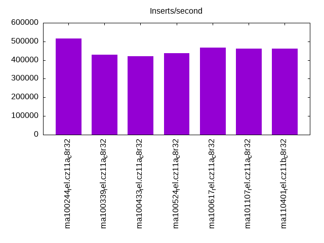
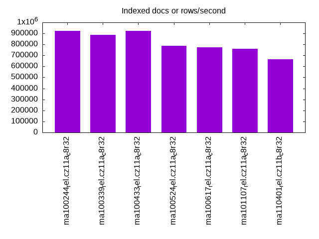
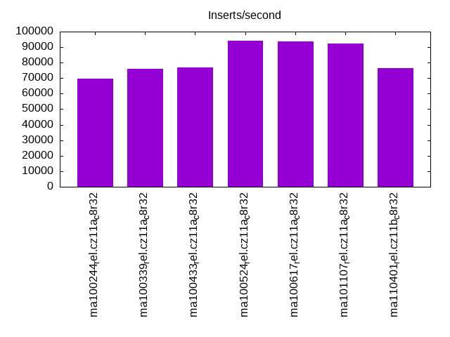
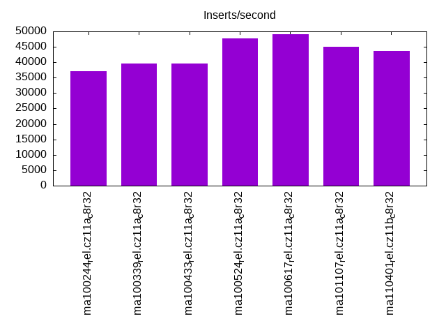
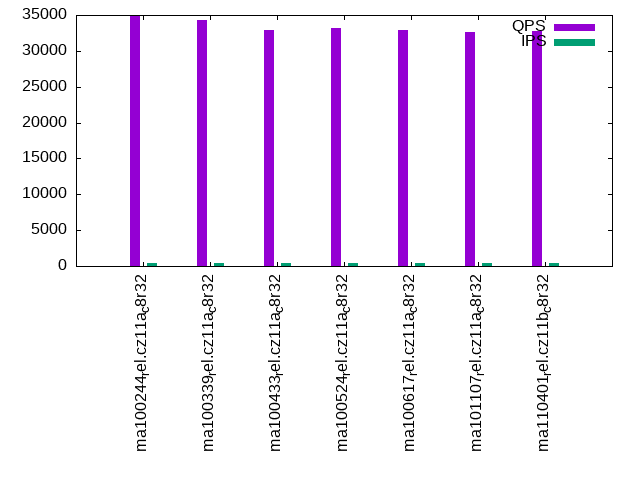
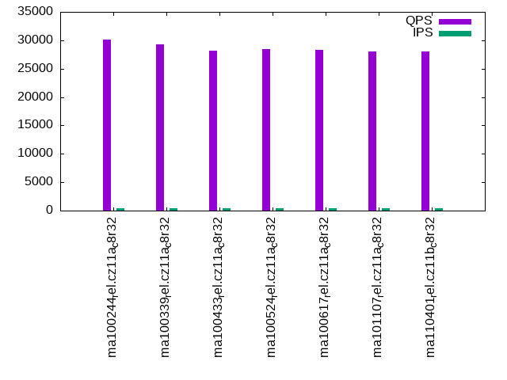
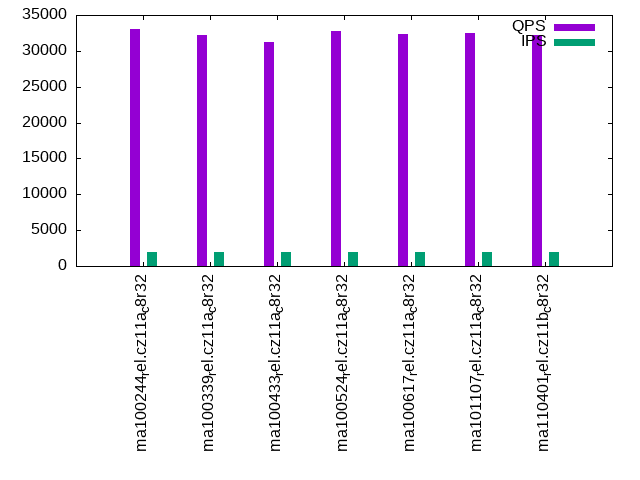
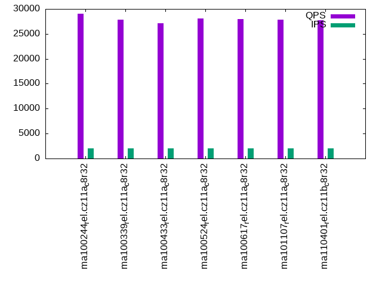
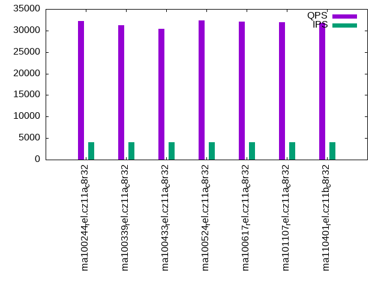
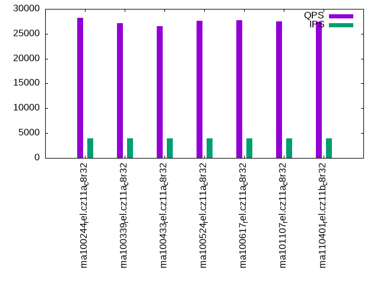

This is a report for the insert benchmark with 48M docs and 4 client(s). It is generated by scripts (bash, awk, sed) and Tufte might not be impressed. An overview of the insert benchmark is here and a short update is here. Below, by DBMS, I mean DBMS+version.config. An example is my8020.c10b40 where my means MySQL, 8020 is version 8.0.20 and c10b40 is the name for the configuration file.
The test server has 8 AMD cores, 32G RAM and an NVMe SSD. It is described here as the ASUS PN53. The benchmark was run with 1 client and there were 1 or 3 connections per client (1 for queries or inserts without rate limits, 1+1 for rate limited inserts+deletes). It uses 4 tables with a table per client. It loads 12M rows per table without secondary indexes, creates 3 secondary indexes per table, then inserts 40 rows per table with a delete per insert to avoid growing the table. It then does 6 read+write tests for 1800s each that do queries as fast as possible with 100,100,500,500,1000,1000 inserts/s and the same for deletes/s per client concurrent with the queries. The database is cached in memory. Clients and the DBMS share one server. The per-database configs are in the per-database subdirectories here.
The tested DBMS are:
The numbers are inserts/s for l.i0, l.i1 and l.i2, indexed docs (or rows) /s for l.x and queries/s for qr100, qp100 thru qr1000, qp1000" The values are the average rate over the entire test for inserts (IPS) and queries (QPS). The range of values for IPS and QPS is split into 3 parts: bottom 25%, middle 50%, top 25%. Values in the bottom 25% have a red background, values in the top 25% have a green background and values in the middle have no color. A gray background is used for values that can be ignored because the DBMS did not sustain the target insert rate. Red backgrounds are not used when the minimum value is within 80% of the max value.
| dbms | l.i0 | l.x | l.i1 | l.i2 | qr100 | qp100 | qr500 | qp500 | qr1000 | qp1000 |
|---|---|---|---|---|---|---|---|---|---|---|
| ma100244_rel.cz11a_c8r32 | 516129 | 923079 | 69717 | 36994 | 34905 | 30160 | 33111 | 29078 | 32160 | 28177 |
| ma100339_rel.cz11a_c8r32 | 428571 | 888891 | 76010 | 39555 | 34250 | 29240 | 32245 | 27890 | 31190 | 27168 |
| ma100433_rel.cz11a_c8r32 | 421053 | 923079 | 76831 | 39653 | 32956 | 28177 | 31303 | 27098 | 30358 | 26492 |
| ma100524_rel.cz11a_c8r32 | 436364 | 786887 | 93910 | 47761 | 33134 | 28405 | 32789 | 28085 | 32315 | 27638 |
| ma100617_rel.cz11a_c8r32 | 466019 | 774195 | 93704 | 49155 | 32866 | 28288 | 32364 | 27994 | 32060 | 27681 |
| ma101107_rel.cz11a_c8r32 | 461538 | 761906 | 92219 | 45134 | 32657 | 28016 | 32449 | 27863 | 31928 | 27489 |
| ma110401_rel.cz11b_c8r32 | 461538 | 666668 | 76509 | 43716 | 32780 | 28093 | 32263 | 27772 | 31845 | 27413 |
This table has relative throughput, throughput for the DBMS relative to the DBMS in the first line, using the absolute throughput from the previous table. Values less than 0.95 have a yellow background. Values greater than 1.05 have a blue background.
| dbms | l.i0 | l.x | l.i1 | l.i2 | qr100 | qp100 | qr500 | qp500 | qr1000 | qp1000 |
|---|---|---|---|---|---|---|---|---|---|---|
| ma100244_rel.cz11a_c8r32 | 1.00 | 1.00 | 1.00 | 1.00 | 1.00 | 1.00 | 1.00 | 1.00 | 1.00 | 1.00 |
| ma100339_rel.cz11a_c8r32 | 0.83 | 0.96 | 1.09 | 1.07 | 0.98 | 0.97 | 0.97 | 0.96 | 0.97 | 0.96 |
| ma100433_rel.cz11a_c8r32 | 0.82 | 1.00 | 1.10 | 1.07 | 0.94 | 0.93 | 0.95 | 0.93 | 0.94 | 0.94 |
| ma100524_rel.cz11a_c8r32 | 0.85 | 0.85 | 1.35 | 1.29 | 0.95 | 0.94 | 0.99 | 0.97 | 1.00 | 0.98 |
| ma100617_rel.cz11a_c8r32 | 0.90 | 0.84 | 1.34 | 1.33 | 0.94 | 0.94 | 0.98 | 0.96 | 1.00 | 0.98 |
| ma101107_rel.cz11a_c8r32 | 0.89 | 0.83 | 1.32 | 1.22 | 0.94 | 0.93 | 0.98 | 0.96 | 0.99 | 0.98 |
| ma110401_rel.cz11b_c8r32 | 0.89 | 0.72 | 1.10 | 1.18 | 0.94 | 0.93 | 0.97 | 0.96 | 0.99 | 0.97 |
This lists the average rate of inserts/s for the tests that do inserts concurrent with queries. For such tests the query rate is listed in the table above. The read+write tests are setup so that the insert rate should match the target rate every second. Cells that are not at least 95% of the target have a red background to indicate a failure to satisfy the target.
| dbms | qr100.L1 | qp100.L2 | qr500.L3 | qp500.L4 | qr1000.L5 | qp1000.L6 |
|---|---|---|---|---|---|---|
| ma100244_rel.cz11a_c8r32 | 399 | 399 | 1994 | 1994 | 3989 | 3989 |
| ma100339_rel.cz11a_c8r32 | 399 | 399 | 1994 | 1993 | 3989 | 3989 |
| ma100433_rel.cz11a_c8r32 | 399 | 399 | 1994 | 1994 | 3989 | 3989 |
| ma100524_rel.cz11a_c8r32 | 399 | 399 | 1994 | 1994 | 3989 | 3989 |
| ma100617_rel.cz11a_c8r32 | 399 | 399 | 1994 | 1993 | 3989 | 3989 |
| ma101107_rel.cz11a_c8r32 | 399 | 399 | 1994 | 1994 | 3989 | 3989 |
| ma110401_rel.cz11b_c8r32 | 399 | 399 | 1994 | 1994 | 3989 | 3989 |
| target | 400 | 400 | 2000 | 2000 | 4000 | 4000 |
l.i0: load without secondary indexes. Graphs for performance per 1-second interval are here.
Average throughput:
Insert response time histogram: each cell has the percentage of responses that take <= the time in the header and max is the max response time in seconds. For the max column values in the top 25% of the range have a red background and in the bottom 25% of the range have a green background. The red background is not used when the min value is within 80% of the max value.
| dbms | 256us | 1ms | 4ms | 16ms | 64ms | 256ms | 1s | 4s | 16s | gt | max |
|---|---|---|---|---|---|---|---|---|---|---|---|
| ma100244_rel.cz11a_c8r32 | 97.433 | 2.227 | 0.316 | 0.008 | 0.016 | 0.127 | |||||
| ma100339_rel.cz11a_c8r32 | 86.240 | 13.360 | 0.371 | 0.012 | 0.016 | 0.136 | |||||
| ma100433_rel.cz11a_c8r32 | 86.226 | 13.386 | 0.361 | 0.011 | 0.016 | 0.129 | |||||
| ma100524_rel.cz11a_c8r32 | 94.533 | 4.818 | 0.502 | 0.125 | 0.022 | 0.176 | |||||
| ma100617_rel.cz11a_c8r32 | 92.352 | 7.293 | 0.320 | 0.019 | 0.017 | 0.184 | |||||
| ma101107_rel.cz11a_c8r32 | 90.347 | 9.297 | 0.321 | 0.018 | 0.017 | 0.203 | |||||
| ma110401_rel.cz11b_c8r32 | 90.299 | 9.361 | 0.305 | 0.018 | 0.018 | 0.196 |
Performance metrics for the DBMS listed above. Some are normalized by throughput, others are not. Legend for results is here.
ips qps rps rmbps wps wmbps rpq rkbpq wpi wkbpi csps cpups cspq cpupq dbgb1 dbgb2 rss maxop p50 p99 tag 516129 0 1 0.0 2542.1 164.2 0.000 0.000 0.005 0.326 49301 71.3 0.096 11 3.2 34.0 4.1 0.127 151537 130760 ma100244_rel.cz11a_c8r32 428571 0 1 0.0 2288.0 148.0 0.000 0.000 0.005 0.354 56300 76.2 0.131 14 3.2 34.0 3.5 0.136 119867 87769 ma100339_rel.cz11a_c8r32 421053 0 1 0.0 2208.7 145.0 0.000 0.000 0.005 0.353 56505 76.5 0.134 15 3.2 34.0 NA 0.129 119273 100393 ma100433_rel.cz11a_c8r32 436364 0 0 0.0 3033.6 129.9 0.000 0.000 0.007 0.305 95101 71.0 0.218 13 3.2 34.0 3.4 0.176 124265 105585 ma100524_rel.cz11a_c8r32 466019 0 0 0.0 1701.9 111.1 0.000 0.000 0.004 0.244 60824 74.7 0.131 13 3.2 34.0 3.3 0.184 133058 105415 ma100617_rel.cz11a_c8r32 461538 0 0 0.0 1817.1 116.1 0.000 0.000 0.004 0.258 51490 73.5 0.112 13 3.2 34.0 3.3 0.203 132160 111481 ma101107_rel.cz11a_c8r32 461538 0 0 0.0 1811.9 115.9 0.000 0.000 0.004 0.257 53668 73.8 0.116 13 3.2 34.0 3.3 0.196 131553 99694 ma110401_rel.cz11b_c8r32
l.x: create secondary indexes.
Average throughput:
Performance metrics for the DBMS listed above. Some are normalized by throughput, others are not. Legend for results is here.
ips qps rps rmbps wps wmbps rpq rkbpq wpi wkbpi csps cpups cspq cpupq dbgb1 dbgb2 rss maxop p50 p99 tag 923079 0 0 0.0 8897.2 746.3 0.000 0.000 0.010 0.828 35642 45.1 0.039 4 7.3 38.1 5.3 0.001 NA NA ma100244_rel.cz11a_c8r32 888891 0 0 0.0 8333.0 718.1 0.000 0.000 0.009 0.827 29646 44.9 0.033 4 7.3 38.1 5.1 0.001 NA NA ma100339_rel.cz11a_c8r32 923079 0 0 0.0 8319.4 724.0 0.000 0.000 0.009 0.803 30976 45.5 0.034 4 7.2 38.0 NA 0.001 NA NA ma100433_rel.cz11a_c8r32 786887 0 0 0.0 4376.6 541.2 0.000 0.000 0.006 0.704 818 44.4 0.001 5 7.2 38.0 7.5 0.002 NA NA ma100524_rel.cz11a_c8r32 774195 0 0 0.0 6954.9 578.9 0.000 0.000 0.009 0.766 12407 45.3 0.016 5 7.2 38.0 7.1 0.001 NA NA ma100617_rel.cz11a_c8r32 761906 0 0 0.0 6675.2 568.1 0.000 0.000 0.009 0.763 11343 45.2 0.015 5 7.2 38.0 6.9 0.001 NA NA ma101107_rel.cz11a_c8r32 666668 0 0 0.0 6068.1 498.4 0.000 0.000 0.009 0.765 11238 42.3 0.017 5 7.2 38.0 6.2 2.582 NA NA ma110401_rel.cz11b_c8r32
l.i1: continue load after secondary indexes created with 50 inserts per transaction. Graphs for performance per 1-second interval are here.
Average throughput:
Insert response time histogram: each cell has the percentage of responses that take <= the time in the header and max is the max response time in seconds. For the max column values in the top 25% of the range have a red background and in the bottom 25% of the range have a green background. The red background is not used when the min value is within 80% of the max value.
| dbms | 256us | 1ms | 4ms | 16ms | 64ms | 256ms | 1s | 4s | 16s | gt | max |
|---|---|---|---|---|---|---|---|---|---|---|---|
| ma100244_rel.cz11a_c8r32 | 0.032 | 84.507 | 14.926 | 0.523 | 0.012 | 0.177 | |||||
| ma100339_rel.cz11a_c8r32 | 0.068 | 87.488 | 11.964 | 0.468 | 0.013 | 0.150 | |||||
| ma100433_rel.cz11a_c8r32 | 0.042 | 87.489 | 12.020 | 0.436 | 0.013 | 0.159 | |||||
| ma100524_rel.cz11a_c8r32 | 0.096 | 96.297 | 3.517 | 0.061 | 0.017 | 0.011 | nonzero | 1.036 | |||
| ma100617_rel.cz11a_c8r32 | 0.739 | 95.450 | 3.686 | 0.108 | 0.016 | nonzero | 0.420 | ||||
| ma101107_rel.cz11a_c8r32 | 0.622 | 94.637 | 4.629 | 0.096 | 0.015 | nonzero | 0.266 | ||||
| ma110401_rel.cz11b_c8r32 | 3.075 | 87.926 | 7.640 | 1.328 | 0.029 | 0.002 | 0.714 |
Delete response time histogram: each cell has the percentage of responses that take <= the time in the header and max is the max response time in seconds. For the max column values in the top 25% of the range have a red background and in the bottom 25% of the range have a green background. The red background is not used when the min value is within 80% of the max value.
| dbms | 256us | 1ms | 4ms | 16ms | 64ms | 256ms | 1s | 4s | 16s | gt | max |
|---|---|---|---|---|---|---|---|---|---|---|---|
| ma100244_rel.cz11a_c8r32 | 7.247 | 78.098 | 14.233 | 0.410 | 0.012 | 0.159 | |||||
| ma100339_rel.cz11a_c8r32 | 21.120 | 67.045 | 11.485 | 0.338 | 0.011 | 0.144 | |||||
| ma100433_rel.cz11a_c8r32 | 20.700 | 67.406 | 11.559 | 0.323 | 0.012 | 0.153 | |||||
| ma100524_rel.cz11a_c8r32 | 20.726 | 76.520 | 2.682 | 0.046 | 0.019 | 0.007 | nonzero | 1.036 | |||
| ma100617_rel.cz11a_c8r32 | 17.661 | 79.410 | 2.828 | 0.088 | 0.013 | nonzero | 0.422 | ||||
| ma101107_rel.cz11a_c8r32 | 16.692 | 79.130 | 4.083 | 0.081 | 0.013 | 0.208 | |||||
| ma110401_rel.cz11b_c8r32 | 22.684 | 69.498 | 6.697 | 1.095 | 0.025 | 0.001 | 0.681 |
Performance metrics for the DBMS listed above. Some are normalized by throughput, others are not. Legend for results is here.
ips qps rps rmbps wps wmbps rpq rkbpq wpi wkbpi csps cpups cspq cpupq dbgb1 dbgb2 rss maxop p50 p99 tag 69717 0 0 0.0 8545.6 310.5 0.000 0.000 0.123 4.561 41904 80.8 0.601 93 10.7 41.5 11.9 0.177 17381 10039 ma100244_rel.cz11a_c8r32 76010 0 0 0.0 7992.9 301.6 0.000 0.000 0.105 4.064 43609 80.1 0.574 84 10.9 41.8 12.2 0.150 19129 8890 ma100339_rel.cz11a_c8r32 76831 0 0 0.0 8137.7 303.4 0.000 0.000 0.106 4.044 44861 80.3 0.584 84 11.0 41.9 NA 0.159 19080 10953 ma100433_rel.cz11a_c8r32 93910 0 0 0.0 7899.0 286.4 0.000 0.000 0.084 3.123 71667 88.5 0.763 75 10.8 43.1 12.2 1.036 24474 1398 ma100524_rel.cz11a_c8r32 93704 0 0 0.0 9676.9 338.4 0.000 0.000 0.103 3.699 132762 85.2 1.417 73 10.0 40.9 10.2 0.420 24067 11837 ma100617_rel.cz11a_c8r32 92219 0 3797 14.8 9695.1 339.7 0.041 0.165 0.105 3.772 123979 83.2 1.344 72 10.0 40.8 10.1 0.266 23725 12041 ma101107_rel.cz11a_c8r32 76509 0 2911 11.4 8556.0 289.4 0.038 0.152 0.112 3.874 109946 67.3 1.437 70 10.1 41.0 10.1 0.714 19829 7842 ma110401_rel.cz11b_c8r32
l.i2: continue load after secondary indexes created with 5 inserts per transaction. Graphs for performance per 1-second interval are here.
Average throughput:
Insert response time histogram: each cell has the percentage of responses that take <= the time in the header and max is the max response time in seconds. For the max column values in the top 25% of the range have a red background and in the bottom 25% of the range have a green background. The red background is not used when the min value is within 80% of the max value.
| dbms | 256us | 1ms | 4ms | 16ms | 64ms | 256ms | 1s | 4s | 16s | gt | max |
|---|---|---|---|---|---|---|---|---|---|---|---|
| ma100244_rel.cz11a_c8r32 | 23.158 | 72.144 | 3.523 | 1.170 | 0.003 | 0.002 | 0.135 | ||||
| ma100339_rel.cz11a_c8r32 | 26.328 | 69.413 | 3.358 | 0.895 | 0.005 | 0.002 | 0.139 | ||||
| ma100433_rel.cz11a_c8r32 | 25.457 | 70.415 | 3.263 | 0.861 | 0.003 | 0.002 | 0.134 | ||||
| ma100524_rel.cz11a_c8r32 | 25.209 | 72.854 | 1.849 | 0.085 | 0.002 | 0.002 | 0.144 | ||||
| ma100617_rel.cz11a_c8r32 | 31.943 | 64.924 | 3.011 | 0.119 | 0.002 | 0.002 | 0.138 | ||||
| ma101107_rel.cz11a_c8r32 | 17.259 | 79.386 | 3.254 | 0.098 | 0.001 | 0.002 | 0.139 | ||||
| ma110401_rel.cz11b_c8r32 | 21.896 | 74.945 | 2.801 | 0.326 | 0.030 | 0.002 | 0.143 |
Delete response time histogram: each cell has the percentage of responses that take <= the time in the header and max is the max response time in seconds. For the max column values in the top 25% of the range have a red background and in the bottom 25% of the range have a green background. The red background is not used when the min value is within 80% of the max value.
| dbms | 256us | 1ms | 4ms | 16ms | 64ms | 256ms | 1s | 4s | 16s | gt | max |
|---|---|---|---|---|---|---|---|---|---|---|---|
| ma100244_rel.cz11a_c8r32 | 24.374 | 71.122 | 3.339 | 1.160 | 0.003 | 0.002 | 0.135 | ||||
| ma100339_rel.cz11a_c8r32 | 28.297 | 67.431 | 3.376 | 0.890 | 0.004 | 0.002 | 0.141 | ||||
| ma100433_rel.cz11a_c8r32 | 27.613 | 68.268 | 3.259 | 0.855 | 0.003 | 0.002 | 0.134 | ||||
| ma100524_rel.cz11a_c8r32 | 27.518 | 70.612 | 1.789 | 0.077 | 0.002 | 0.002 | 0.144 | ||||
| ma100617_rel.cz11a_c8r32 | 33.983 | 62.663 | 3.230 | 0.122 | 0.002 | 0.002 | 0.139 | ||||
| ma101107_rel.cz11a_c8r32 | 22.189 | 74.286 | 3.419 | 0.104 | 0.001 | 0.002 | 0.138 | ||||
| ma110401_rel.cz11b_c8r32 | 25.235 | 71.560 | 2.873 | 0.303 | 0.026 | 0.002 | 0.144 |
Performance metrics for the DBMS listed above. Some are normalized by throughput, others are not. Legend for results is here.
ips qps rps rmbps wps wmbps rpq rkbpq wpi wkbpi csps cpups cspq cpupq dbgb1 dbgb2 rss maxop p50 p99 tag 36994 0 0 0.0 6797.9 226.5 0.000 0.000 0.184 6.271 118806 81.1 3.211 175 10.7 41.5 11.9 0.135 9323 7382 ma100244_rel.cz11a_c8r32 39555 0 0 0.0 5708.9 200.5 0.000 0.000 0.144 5.190 123364 82.3 3.119 166 10.9 41.8 12.2 0.139 9864 8266 ma100339_rel.cz11a_c8r32 39653 0 0 0.0 5628.0 196.9 0.000 0.000 0.142 5.086 125547 82.7 3.166 167 11.0 41.9 NA 0.134 9954 8358 ma100433_rel.cz11a_c8r32 47761 0 0 0.0 10476.7 324.4 0.000 0.000 0.219 6.954 182758 89.0 3.827 149 10.8 43.1 12.2 0.144 11952 10374 ma100524_rel.cz11a_c8r32 49155 0 0 0.0 5044.6 177.0 0.000 0.000 0.103 3.687 169250 87.7 3.443 143 10.0 40.9 10.1 0.138 12342 10708 ma100617_rel.cz11a_c8r32 45134 0 5903 23.1 4807.8 168.7 0.131 0.523 0.107 3.828 178328 83.5 3.951 148 10.0 40.8 10.1 0.139 11313 9964 ma101107_rel.cz11a_c8r32 43716 0 5646 22.1 4743.0 162.1 0.129 0.517 0.108 3.797 175773 80.5 4.021 147 10.1 41.0 10.1 0.143 11183 8259 ma110401_rel.cz11b_c8r32
qr100.L1: range queries with 100 insert/s per client. Graphs for performance per 1-second interval are here.
Average throughput:
Query response time histogram: each cell has the percentage of responses that take <= the time in the header and max is the max response time in seconds. For max values in the top 25% of the range have a red background and in the bottom 25% of the range have a green background. The red background is not used when the min value is within 80% of the max value.
| dbms | 256us | 1ms | 4ms | 16ms | 64ms | 256ms | 1s | 4s | 16s | gt | max |
|---|---|---|---|---|---|---|---|---|---|---|---|
| ma100244_rel.cz11a_c8r32 | 99.947 | 0.050 | 0.003 | nonzero | nonzero | 0.020 | |||||
| ma100339_rel.cz11a_c8r32 | 99.955 | 0.043 | 0.002 | nonzero | nonzero | 0.025 | |||||
| ma100433_rel.cz11a_c8r32 | 99.941 | 0.056 | 0.003 | nonzero | nonzero | 0.020 | |||||
| ma100524_rel.cz11a_c8r32 | 99.993 | 0.007 | nonzero | 0.003 | |||||||
| ma100617_rel.cz11a_c8r32 | 99.993 | 0.007 | nonzero | nonzero | 0.011 | ||||||
| ma101107_rel.cz11a_c8r32 | 99.990 | 0.009 | 0.001 | nonzero | 0.005 | ||||||
| ma110401_rel.cz11b_c8r32 | 99.991 | 0.008 | 0.001 | nonzero | 0.008 |
Insert response time histogram: each cell has the percentage of responses that take <= the time in the header and max is the max response time in seconds. For max values in the top 25% of the range have a red background and in the bottom 25% of the range have a green background. The red background is not used when the min value is within 80% of the max value.
| dbms | 256us | 1ms | 4ms | 16ms | 64ms | 256ms | 1s | 4s | 16s | gt | max |
|---|---|---|---|---|---|---|---|---|---|---|---|
| ma100244_rel.cz11a_c8r32 | 1.660 | 95.438 | 2.701 | 0.201 | 0.036 | ||||||
| ma100339_rel.cz11a_c8r32 | 1.118 | 95.903 | 2.799 | 0.181 | 0.030 | ||||||
| ma100433_rel.cz11a_c8r32 | 0.674 | 96.160 | 2.965 | 0.201 | 0.036 | ||||||
| ma100524_rel.cz11a_c8r32 | 7.028 | 92.965 | 0.007 | 0.004 | |||||||
| ma100617_rel.cz11a_c8r32 | 20.465 | 79.521 | 0.014 | 0.007 | |||||||
| ma101107_rel.cz11a_c8r32 | 1.083 | 62.111 | 36.806 | 0.012 | |||||||
| ma110401_rel.cz11b_c8r32 | 2.611 | 55.528 | 41.861 | 0.012 |
Delete response time histogram: each cell has the percentage of responses that take <= the time in the header and max is the max response time in seconds. For max values in the top 25% of the range have a red background and in the bottom 25% of the range have a green background. The red background is not used when the min value is within 80% of the max value.
| dbms | 256us | 1ms | 4ms | 16ms | 64ms | 256ms | 1s | 4s | 16s | gt | max |
|---|---|---|---|---|---|---|---|---|---|---|---|
| ma100244_rel.cz11a_c8r32 | 60.639 | 36.722 | 2.562 | 0.076 | 0.031 | ||||||
| ma100339_rel.cz11a_c8r32 | 76.694 | 20.771 | 2.424 | 0.111 | 0.023 | ||||||
| ma100433_rel.cz11a_c8r32 | 74.931 | 22.438 | 2.528 | 0.104 | 0.023 | ||||||
| ma100524_rel.cz11a_c8r32 | 96.069 | 3.931 | 0.004 | ||||||||
| ma100617_rel.cz11a_c8r32 | 72.722 | 27.271 | 0.007 | 0.008 | |||||||
| ma101107_rel.cz11a_c8r32 | 12.340 | 49.562 | 38.097 | 0.012 | |||||||
| ma110401_rel.cz11b_c8r32 | 12.424 | 45.729 | 41.847 | 0.011 |
Performance metrics for the DBMS listed above. Some are normalized by throughput, others are not. Legend for results is here.
ips qps rps rmbps wps wmbps rpq rkbpq wpi wkbpi csps cpups cspq cpupq dbgb1 dbgb2 rss maxop p50 p99 tag 399 34905 0 0.0 3315.9 92.3 0.000 0.000 8.315 237.015 143650 53.1 4.115 122 10.7 41.5 12.0 0.020 8743 8647 ma100244_rel.cz11a_c8r32 399 34250 0 0.0 3325.7 92.6 0.000 0.000 8.339 237.734 140545 53.1 4.103 124 10.9 41.8 12.2 0.025 8612 8503 ma100339_rel.cz11a_c8r32 399 32956 0 0.0 3316.4 92.3 0.000 0.000 8.316 237.059 137112 53.0 4.160 129 11.0 41.9 NA 0.020 8247 8139 ma100433_rel.cz11a_c8r32 399 33134 0 0.0 4.9 0.4 0.000 0.000 0.012 1.081 127402 52.2 3.845 126 10.8 43.1 12.2 0.003 8279 8199 ma100524_rel.cz11a_c8r32 399 32866 0 0.0 17.4 0.8 0.000 0.000 0.044 1.981 125542 52.1 3.820 127 10.0 40.9 10.1 0.011 8199 8119 ma100617_rel.cz11a_c8r32 399 32657 8 0.0 11.3 0.6 0.000 0.001 0.028 1.571 124766 52.2 3.821 128 10.0 40.8 10.0 0.005 8103 8023 ma101107_rel.cz11a_c8r32 399 32780 8 0.0 18.0 0.8 0.000 0.001 0.045 2.018 125270 52.2 3.822 127 10.1 41.0 10.1 0.008 8167 8103 ma110401_rel.cz11b_c8r32
qp100.L2: point queries with 100 insert/s per client. Graphs for performance per 1-second interval are here.
Average throughput:
Query response time histogram: each cell has the percentage of responses that take <= the time in the header and max is the max response time in seconds. For max values in the top 25% of the range have a red background and in the bottom 25% of the range have a green background. The red background is not used when the min value is within 80% of the max value.
| dbms | 256us | 1ms | 4ms | 16ms | 64ms | 256ms | 1s | 4s | 16s | gt | max |
|---|---|---|---|---|---|---|---|---|---|---|---|
| ma100244_rel.cz11a_c8r32 | 99.973 | 0.026 | 0.001 | nonzero | 0.013 | ||||||
| ma100339_rel.cz11a_c8r32 | 99.960 | 0.039 | 0.001 | nonzero | nonzero | 0.016 | |||||
| ma100433_rel.cz11a_c8r32 | 99.943 | 0.056 | 0.001 | nonzero | nonzero | 0.020 | |||||
| ma100524_rel.cz11a_c8r32 | 99.957 | 0.042 | 0.001 | 0.003 | |||||||
| ma100617_rel.cz11a_c8r32 | 99.927 | 0.073 | 0.001 | 0.002 | |||||||
| ma101107_rel.cz11a_c8r32 | 99.914 | 0.082 | 0.004 | 0.004 | |||||||
| ma110401_rel.cz11b_c8r32 | 99.922 | 0.075 | 0.002 | 0.002 |
Insert response time histogram: each cell has the percentage of responses that take <= the time in the header and max is the max response time in seconds. For max values in the top 25% of the range have a red background and in the bottom 25% of the range have a green background. The red background is not used when the min value is within 80% of the max value.
| dbms | 256us | 1ms | 4ms | 16ms | 64ms | 256ms | 1s | 4s | 16s | gt | max |
|---|---|---|---|---|---|---|---|---|---|---|---|
| ma100244_rel.cz11a_c8r32 | 0.326 | 96.646 | 2.812 | 0.215 | 0.027 | ||||||
| ma100339_rel.cz11a_c8r32 | 0.389 | 96.486 | 2.931 | 0.194 | 0.030 | ||||||
| ma100433_rel.cz11a_c8r32 | 0.042 | 97.167 | 2.611 | 0.181 | 0.029 | ||||||
| ma100524_rel.cz11a_c8r32 | 0.222 | 99.778 | 0.003 | ||||||||
| ma100617_rel.cz11a_c8r32 | 7.694 | 92.292 | 0.014 | 0.010 | |||||||
| ma101107_rel.cz11a_c8r32 | 0.062 | 53.299 | 46.639 | 0.012 | |||||||
| ma110401_rel.cz11b_c8r32 | 3.097 | 61.785 | 35.118 | 0.011 |
Delete response time histogram: each cell has the percentage of responses that take <= the time in the header and max is the max response time in seconds. For max values in the top 25% of the range have a red background and in the bottom 25% of the range have a green background. The red background is not used when the min value is within 80% of the max value.
| dbms | 256us | 1ms | 4ms | 16ms | 64ms | 256ms | 1s | 4s | 16s | gt | max |
|---|---|---|---|---|---|---|---|---|---|---|---|
| ma100244_rel.cz11a_c8r32 | 38.785 | 58.549 | 2.528 | 0.139 | 0.026 | ||||||
| ma100339_rel.cz11a_c8r32 | 69.354 | 27.896 | 2.694 | 0.056 | 0.029 | ||||||
| ma100433_rel.cz11a_c8r32 | 60.410 | 37.201 | 2.312 | 0.076 | 0.029 | ||||||
| ma100524_rel.cz11a_c8r32 | 64.208 | 35.792 | 0.003 | ||||||||
| ma100617_rel.cz11a_c8r32 | 63.236 | 36.764 | 0.003 | ||||||||
| ma101107_rel.cz11a_c8r32 | 3.583 | 49.792 | 46.625 | 0.012 | |||||||
| ma110401_rel.cz11b_c8r32 | 10.000 | 54.889 | 35.111 | 0.011 |
Performance metrics for the DBMS listed above. Some are normalized by throughput, others are not. Legend for results is here.
ips qps rps rmbps wps wmbps rpq rkbpq wpi wkbpi csps cpups cspq cpupq dbgb1 dbgb2 rss maxop p50 p99 tag 399 30160 0 0.0 3304.6 92.0 0.000 0.000 8.286 236.212 129969 53.0 4.309 141 10.7 41.5 12.0 0.013 7544 7480 ma100244_rel.cz11a_c8r32 399 29240 0 0.0 3301.4 91.9 0.000 0.000 8.278 236.005 126138 52.7 4.314 144 10.9 41.8 12.3 0.016 7320 7256 ma100339_rel.cz11a_c8r32 399 28177 0 0.0 3303.2 92.0 0.000 0.000 8.283 236.126 123019 52.8 4.366 150 11.0 41.9 NA 0.020 7067 6987 ma100433_rel.cz11a_c8r32 399 28405 0 0.0 4.9 0.4 0.000 0.000 0.012 1.082 114015 52.1 4.014 147 10.8 43.1 12.2 0.003 7128 7064 ma100524_rel.cz11a_c8r32 399 28288 0 0.0 23.7 0.9 0.000 0.000 0.059 2.421 112798 52.0 3.988 147 10.0 40.9 10.1 0.002 7080 7003 ma100617_rel.cz11a_c8r32 399 28016 8 0.0 23.7 0.9 0.000 0.001 0.060 2.437 111714 51.9 3.988 148 10.0 40.8 10.0 0.004 7000 6937 ma101107_rel.cz11a_c8r32 399 28093 10 0.0 24.3 0.9 0.000 0.001 0.061 2.439 112059 51.9 3.989 148 10.1 41.0 10.1 0.002 7019 6954 ma110401_rel.cz11b_c8r32
qr500.L3: range queries with 500 insert/s per client. Graphs for performance per 1-second interval are here.
Average throughput:
Query response time histogram: each cell has the percentage of responses that take <= the time in the header and max is the max response time in seconds. For max values in the top 25% of the range have a red background and in the bottom 25% of the range have a green background. The red background is not used when the min value is within 80% of the max value.
| dbms | 256us | 1ms | 4ms | 16ms | 64ms | 256ms | 1s | 4s | 16s | gt | max |
|---|---|---|---|---|---|---|---|---|---|---|---|
| ma100244_rel.cz11a_c8r32 | 99.737 | 0.230 | 0.031 | 0.003 | nonzero | 0.030 | |||||
| ma100339_rel.cz11a_c8r32 | 99.660 | 0.301 | 0.037 | 0.002 | nonzero | 0.029 | |||||
| ma100433_rel.cz11a_c8r32 | 99.649 | 0.307 | 0.041 | 0.003 | nonzero | 0.036 | |||||
| ma100524_rel.cz11a_c8r32 | 99.973 | 0.021 | 0.006 | nonzero | 0.015 | ||||||
| ma100617_rel.cz11a_c8r32 | 99.959 | 0.036 | 0.005 | nonzero | 0.015 | ||||||
| ma101107_rel.cz11a_c8r32 | 99.938 | 0.047 | 0.015 | nonzero | 0.014 | ||||||
| ma110401_rel.cz11b_c8r32 | 99.940 | 0.046 | 0.013 | nonzero | 0.015 |
Insert response time histogram: each cell has the percentage of responses that take <= the time in the header and max is the max response time in seconds. For max values in the top 25% of the range have a red background and in the bottom 25% of the range have a green background. The red background is not used when the min value is within 80% of the max value.
| dbms | 256us | 1ms | 4ms | 16ms | 64ms | 256ms | 1s | 4s | 16s | gt | max |
|---|---|---|---|---|---|---|---|---|---|---|---|
| ma100244_rel.cz11a_c8r32 | 6.132 | 83.535 | 9.750 | 0.583 | 0.043 | ||||||
| ma100339_rel.cz11a_c8r32 | 5.324 | 84.001 | 10.043 | 0.632 | 0.063 | ||||||
| ma100433_rel.cz11a_c8r32 | 5.281 | 83.867 | 10.274 | 0.579 | 0.050 | ||||||
| ma100524_rel.cz11a_c8r32 | 13.321 | 85.362 | 1.307 | 0.010 | 0.035 | ||||||
| ma100617_rel.cz11a_c8r32 | 27.133 | 71.772 | 1.083 | 0.011 | 0.039 | ||||||
| ma101107_rel.cz11a_c8r32 | 1.479 | 88.206 | 10.303 | 0.013 | 0.030 | ||||||
| ma110401_rel.cz11b_c8r32 | 4.203 | 88.297 | 7.487 | 0.013 | 0.032 |
Delete response time histogram: each cell has the percentage of responses that take <= the time in the header and max is the max response time in seconds. For max values in the top 25% of the range have a red background and in the bottom 25% of the range have a green background. The red background is not used when the min value is within 80% of the max value.
| dbms | 256us | 1ms | 4ms | 16ms | 64ms | 256ms | 1s | 4s | 16s | gt | max |
|---|---|---|---|---|---|---|---|---|---|---|---|
| ma100244_rel.cz11a_c8r32 | 45.751 | 45.649 | 8.132 | 0.468 | 0.045 | ||||||
| ma100339_rel.cz11a_c8r32 | 61.433 | 29.704 | 8.358 | 0.504 | 0.049 | ||||||
| ma100433_rel.cz11a_c8r32 | 62.518 | 28.421 | 8.646 | 0.415 | 0.049 | ||||||
| ma100524_rel.cz11a_c8r32 | 82.583 | 16.483 | 0.922 | 0.011 | 0.035 | ||||||
| ma100617_rel.cz11a_c8r32 | 70.254 | 28.882 | 0.856 | 0.008 | 0.037 | ||||||
| ma101107_rel.cz11a_c8r32 | 18.286 | 72.489 | 9.213 | 0.013 | 0.034 | ||||||
| ma110401_rel.cz11b_c8r32 | 17.947 | 75.671 | 6.371 | 0.011 | 0.033 |
Performance metrics for the DBMS listed above. Some are normalized by throughput, others are not. Legend for results is here.
ips qps rps rmbps wps wmbps rpq rkbpq wpi wkbpi csps cpups cspq cpupq dbgb1 dbgb2 rss maxop p50 p99 tag 1994 33111 0 0.0 11934.1 333.0 0.000 0.000 5.984 170.999 160673 56.8 4.853 137 10.7 41.5 12.0 0.030 8250 8087 ma100244_rel.cz11a_c8r32 1994 32245 0 0.0 11840.2 330.5 0.000 0.000 5.937 169.677 156369 56.8 4.849 141 10.9 41.8 12.3 0.029 8039 7816 ma100339_rel.cz11a_c8r32 1994 31303 0 0.0 11922.0 332.7 0.000 0.000 5.978 170.841 157434 56.4 5.029 144 11.0 41.9 NA 0.036 7752 7576 ma100433_rel.cz11a_c8r32 1994 32789 0 0.0 18.9 2.1 0.000 0.000 0.009 1.075 125757 53.4 3.835 130 10.8 43.1 12.2 0.015 8169 8106 ma100524_rel.cz11a_c8r32 1994 32364 0 0.0 163.0 5.9 0.000 0.000 0.082 3.019 123944 53.3 3.830 132 10.0 40.9 10.1 0.015 8074 7895 ma100617_rel.cz11a_c8r32 1994 32449 57 0.2 165.0 6.0 0.002 0.007 0.083 3.062 124428 53.3 3.835 131 10.0 40.8 10.0 0.014 8135 7928 ma101107_rel.cz11a_c8r32 1994 32263 59 0.2 167.5 5.9 0.002 0.007 0.084 3.043 123788 53.3 3.837 132 10.1 41.0 10.1 0.015 8074 7816 ma110401_rel.cz11b_c8r32
qp500.L4: point queries with 500 insert/s per client. Graphs for performance per 1-second interval are here.
Average throughput:
Query response time histogram: each cell has the percentage of responses that take <= the time in the header and max is the max response time in seconds. For max values in the top 25% of the range have a red background and in the bottom 25% of the range have a green background. The red background is not used when the min value is within 80% of the max value.
| dbms | 256us | 1ms | 4ms | 16ms | 64ms | 256ms | 1s | 4s | 16s | gt | max |
|---|---|---|---|---|---|---|---|---|---|---|---|
| ma100244_rel.cz11a_c8r32 | 99.834 | 0.146 | 0.019 | 0.001 | nonzero | 0.020 | |||||
| ma100339_rel.cz11a_c8r32 | 99.824 | 0.153 | 0.021 | 0.002 | nonzero | 0.035 | |||||
| ma100433_rel.cz11a_c8r32 | 99.771 | 0.206 | 0.022 | 0.001 | nonzero | 0.027 | |||||
| ma100524_rel.cz11a_c8r32 | 99.934 | 0.058 | 0.008 | nonzero | 0.015 | ||||||
| ma100617_rel.cz11a_c8r32 | 99.851 | 0.141 | 0.008 | nonzero | 0.011 | ||||||
| ma101107_rel.cz11a_c8r32 | 99.868 | 0.122 | 0.010 | nonzero | 0.014 | ||||||
| ma110401_rel.cz11b_c8r32 | 99.885 | 0.107 | 0.008 | nonzero | nonzero | 0.017 |
Insert response time histogram: each cell has the percentage of responses that take <= the time in the header and max is the max response time in seconds. For max values in the top 25% of the range have a red background and in the bottom 25% of the range have a green background. The red background is not used when the min value is within 80% of the max value.
| dbms | 256us | 1ms | 4ms | 16ms | 64ms | 256ms | 1s | 4s | 16s | gt | max |
|---|---|---|---|---|---|---|---|---|---|---|---|
| ma100244_rel.cz11a_c8r32 | 6.776 | 83.300 | 9.228 | 0.694 | 0.001 | 0.068 | |||||
| ma100339_rel.cz11a_c8r32 | 4.994 | 83.793 | 10.426 | 0.785 | 0.001 | 0.067 | |||||
| ma100433_rel.cz11a_c8r32 | 5.260 | 84.332 | 9.715 | 0.693 | 0.053 | ||||||
| ma100524_rel.cz11a_c8r32 | 7.958 | 90.656 | 1.376 | 0.010 | 0.038 | ||||||
| ma100617_rel.cz11a_c8r32 | 18.147 | 80.897 | 0.944 | 0.011 | 0.036 | ||||||
| ma101107_rel.cz11a_c8r32 | 8.876 | 83.806 | 7.308 | 0.010 | 0.037 | ||||||
| ma110401_rel.cz11b_c8r32 | 13.196 | 81.103 | 5.688 | 0.014 | 0.031 |
Delete response time histogram: each cell has the percentage of responses that take <= the time in the header and max is the max response time in seconds. For max values in the top 25% of the range have a red background and in the bottom 25% of the range have a green background. The red background is not used when the min value is within 80% of the max value.
| dbms | 256us | 1ms | 4ms | 16ms | 64ms | 256ms | 1s | 4s | 16s | gt | max |
|---|---|---|---|---|---|---|---|---|---|---|---|
| ma100244_rel.cz11a_c8r32 | 46.718 | 44.838 | 7.935 | 0.510 | 0.048 | ||||||
| ma100339_rel.cz11a_c8r32 | 58.651 | 32.474 | 8.292 | 0.583 | 0.045 | ||||||
| ma100433_rel.cz11a_c8r32 | 61.406 | 30.175 | 7.919 | 0.500 | 0.049 | ||||||
| ma100524_rel.cz11a_c8r32 | 74.732 | 24.403 | 0.860 | 0.006 | 0.035 | ||||||
| ma100617_rel.cz11a_c8r32 | 67.419 | 31.840 | 0.731 | 0.010 | 0.036 | ||||||
| ma101107_rel.cz11a_c8r32 | 41.258 | 51.547 | 7.185 | 0.010 | 0.036 | ||||||
| ma110401_rel.cz11b_c8r32 | 37.340 | 56.994 | 5.651 | 0.014 | 0.031 |
Performance metrics for the DBMS listed above. Some are normalized by throughput, others are not. Legend for results is here.
ips qps rps rmbps wps wmbps rpq rkbpq wpi wkbpi csps cpups cspq cpupq dbgb1 dbgb2 rss maxop p50 p99 tag 1994 29078 0 0.0 12016.4 335.3 0.000 0.000 6.025 172.173 150152 56.9 5.164 157 10.7 41.5 12.0 0.020 7272 7160 ma100244_rel.cz11a_c8r32 1993 27890 0 0.0 12037.9 336.0 0.000 0.000 6.039 172.594 145045 56.8 5.201 163 10.9 41.8 12.3 0.035 6968 6857 ma100339_rel.cz11a_c8r32 1994 27098 0 0.0 12037.3 335.9 0.000 0.000 6.036 172.482 146397 56.6 5.402 167 11.0 41.9 NA 0.027 6763 6649 ma100433_rel.cz11a_c8r32 1994 28085 0 0.0 19.0 2.1 0.000 0.000 0.010 1.075 112419 53.2 4.003 152 10.8 43.1 12.2 0.015 7048 6984 ma100524_rel.cz11a_c8r32 1993 27994 0 0.0 163.5 5.9 0.000 0.000 0.082 3.031 112203 53.1 4.008 152 10.0 40.9 10.1 0.011 7016 6920 ma100617_rel.cz11a_c8r32 1994 27863 69 0.3 164.9 6.0 0.002 0.010 0.083 3.059 111838 53.2 4.014 153 10.0 40.8 10.1 0.014 6968 6856 ma101107_rel.cz11a_c8r32 1994 27772 69 0.3 170.0 6.0 0.002 0.010 0.085 3.055 111605 53.1 4.019 153 10.1 41.0 10.1 0.017 6937 6811 ma110401_rel.cz11b_c8r32
qr1000.L5: range queries with 1000 insert/s per client. Graphs for performance per 1-second interval are here.
Average throughput:
Query response time histogram: each cell has the percentage of responses that take <= the time in the header and max is the max response time in seconds. For max values in the top 25% of the range have a red background and in the bottom 25% of the range have a green background. The red background is not used when the min value is within 80% of the max value.
| dbms | 256us | 1ms | 4ms | 16ms | 64ms | 256ms | 1s | 4s | 16s | gt | max |
|---|---|---|---|---|---|---|---|---|---|---|---|
| ma100244_rel.cz11a_c8r32 | 99.341 | 0.563 | 0.088 | 0.008 | nonzero | 0.032 | |||||
| ma100339_rel.cz11a_c8r32 | 99.217 | 0.692 | 0.084 | 0.006 | nonzero | 0.029 | |||||
| ma100433_rel.cz11a_c8r32 | 99.291 | 0.602 | 0.098 | 0.009 | nonzero | 0.032 | |||||
| ma100524_rel.cz11a_c8r32 | 99.910 | 0.071 | 0.018 | 0.001 | nonzero | 0.024 | |||||
| ma100617_rel.cz11a_c8r32 | 99.915 | 0.073 | 0.012 | 0.001 | nonzero | 0.018 | |||||
| ma101107_rel.cz11a_c8r32 | 99.924 | 0.065 | 0.010 | 0.001 | 0.015 | ||||||
| ma110401_rel.cz11b_c8r32 | 99.911 | 0.074 | 0.014 | 0.001 | nonzero | 0.020 |
Insert response time histogram: each cell has the percentage of responses that take <= the time in the header and max is the max response time in seconds. For max values in the top 25% of the range have a red background and in the bottom 25% of the range have a green background. The red background is not used when the min value is within 80% of the max value.
| dbms | 256us | 1ms | 4ms | 16ms | 64ms | 256ms | 1s | 4s | 16s | gt | max |
|---|---|---|---|---|---|---|---|---|---|---|---|
| ma100244_rel.cz11a_c8r32 | 7.933 | 81.058 | 10.563 | 0.446 | 0.048 | ||||||
| ma100339_rel.cz11a_c8r32 | 6.975 | 81.835 | 10.796 | 0.394 | 0.061 | ||||||
| ma100433_rel.cz11a_c8r32 | 3.340 | 83.322 | 12.810 | 0.528 | 0.050 | ||||||
| ma100524_rel.cz11a_c8r32 | 15.824 | 81.435 | 2.692 | 0.049 | 0.040 | ||||||
| ma100617_rel.cz11a_c8r32 | 25.000 | 73.064 | 1.908 | 0.028 | 0.039 | ||||||
| ma101107_rel.cz11a_c8r32 | 30.652 | 67.385 | 1.956 | 0.007 | 0.040 | ||||||
| ma110401_rel.cz11b_c8r32 | 23.608 | 73.288 | 3.064 | 0.040 | 0.042 |
Delete response time histogram: each cell has the percentage of responses that take <= the time in the header and max is the max response time in seconds. For max values in the top 25% of the range have a red background and in the bottom 25% of the range have a green background. The red background is not used when the min value is within 80% of the max value.
| dbms | 256us | 1ms | 4ms | 16ms | 64ms | 256ms | 1s | 4s | 16s | gt | max |
|---|---|---|---|---|---|---|---|---|---|---|---|
| ma100244_rel.cz11a_c8r32 | 42.900 | 47.933 | 8.864 | 0.303 | 0.047 | ||||||
| ma100339_rel.cz11a_c8r32 | 59.785 | 31.132 | 8.803 | 0.279 | 0.054 | ||||||
| ma100433_rel.cz11a_c8r32 | 56.384 | 33.037 | 10.217 | 0.361 | 0.047 | ||||||
| ma100524_rel.cz11a_c8r32 | 81.404 | 16.629 | 1.931 | 0.036 | 0.039 | ||||||
| ma100617_rel.cz11a_c8r32 | 67.029 | 31.282 | 1.672 | 0.017 | 0.039 | ||||||
| ma101107_rel.cz11a_c8r32 | 74.677 | 23.603 | 1.715 | 0.005 | 0.038 | ||||||
| ma110401_rel.cz11b_c8r32 | 56.348 | 41.070 | 2.550 | 0.032 | 0.043 |
Performance metrics for the DBMS listed above. Some are normalized by throughput, others are not. Legend for results is here.
ips qps rps rmbps wps wmbps rpq rkbpq wpi wkbpi csps cpups cspq cpupq dbgb1 dbgb2 rss maxop p50 p99 tag 3989 32160 0 0.0 13642.2 382.2 0.000 0.000 3.420 98.125 162258 58.5 5.045 146 10.7 41.5 12.0 0.032 8042 7832 ma100244_rel.cz11a_c8r32 3989 31190 0 0.0 13572.1 380.4 0.000 0.000 3.402 97.647 158768 58.3 5.090 150 10.9 41.8 12.3 0.029 7816 7608 ma100339_rel.cz11a_c8r32 3989 30358 0 0.0 13840.1 387.8 0.000 0.000 3.470 99.550 159469 58.2 5.253 153 11.0 41.9 NA 0.032 7592 7384 ma100433_rel.cz11a_c8r32 3989 32315 0 0.0 36.8 4.2 0.000 0.000 0.009 1.079 124219 54.7 3.844 135 10.8 43.1 12.2 0.024 8087 7946 ma100524_rel.cz11a_c8r32 3989 32060 0 0.0 404.6 13.8 0.000 0.000 0.101 3.552 123359 54.6 3.848 136 10.0 40.9 10.1 0.018 7975 7800 ma100617_rel.cz11a_c8r32 3989 31928 107 0.4 427.1 14.5 0.003 0.013 0.107 3.724 123793 54.8 3.877 137 10.0 40.8 10.1 0.015 7991 7802 ma101107_rel.cz11a_c8r32 3989 31845 104 0.4 432.9 14.3 0.003 0.013 0.109 3.683 123217 54.7 3.869 137 10.1 41.0 10.1 0.020 7975 7754 ma110401_rel.cz11b_c8r32
qp1000.L6: point queries with 1000 insert/s per client. Graphs for performance per 1-second interval are here.
Average throughput:
Query response time histogram: each cell has the percentage of responses that take <= the time in the header and max is the max response time in seconds. For max values in the top 25% of the range have a red background and in the bottom 25% of the range have a green background. The red background is not used when the min value is within 80% of the max value.
| dbms | 256us | 1ms | 4ms | 16ms | 64ms | 256ms | 1s | 4s | 16s | gt | max |
|---|---|---|---|---|---|---|---|---|---|---|---|
| ma100244_rel.cz11a_c8r32 | 99.641 | 0.309 | 0.046 | 0.004 | nonzero | 0.026 | |||||
| ma100339_rel.cz11a_c8r32 | 99.554 | 0.407 | 0.036 | 0.003 | nonzero | 0.023 | |||||
| ma100433_rel.cz11a_c8r32 | 99.536 | 0.423 | 0.038 | 0.003 | nonzero | 0.022 | |||||
| ma100524_rel.cz11a_c8r32 | 99.879 | 0.101 | 0.019 | 0.001 | nonzero | 0.016 | |||||
| ma100617_rel.cz11a_c8r32 | 99.846 | 0.141 | 0.012 | nonzero | nonzero | 0.020 | |||||
| ma101107_rel.cz11a_c8r32 | 99.835 | 0.151 | 0.014 | nonzero | 0.008 | ||||||
| ma110401_rel.cz11b_c8r32 | 99.869 | 0.125 | 0.005 | nonzero | 0.013 |
Insert response time histogram: each cell has the percentage of responses that take <= the time in the header and max is the max response time in seconds. For max values in the top 25% of the range have a red background and in the bottom 25% of the range have a green background. The red background is not used when the min value is within 80% of the max value.
| dbms | 256us | 1ms | 4ms | 16ms | 64ms | 256ms | 1s | 4s | 16s | gt | max |
|---|---|---|---|---|---|---|---|---|---|---|---|
| ma100244_rel.cz11a_c8r32 | 8.969 | 80.237 | 10.181 | 0.613 | 0.046 | ||||||
| ma100339_rel.cz11a_c8r32 | 11.957 | 77.506 | 9.944 | 0.593 | 0.048 | ||||||
| ma100433_rel.cz11a_c8r32 | 9.827 | 79.756 | 9.847 | 0.569 | 0.001 | 0.066 | |||||
| ma100524_rel.cz11a_c8r32 | 13.398 | 83.283 | 3.278 | 0.041 | 0.039 | ||||||
| ma100617_rel.cz11a_c8r32 | 13.489 | 83.981 | 2.513 | 0.017 | 0.040 | ||||||
| ma101107_rel.cz11a_c8r32 | 15.353 | 81.567 | 3.069 | 0.011 | 0.040 | ||||||
| ma110401_rel.cz11b_c8r32 | 29.667 | 68.490 | 1.826 | 0.017 | 0.033 |
Delete response time histogram: each cell has the percentage of responses that take <= the time in the header and max is the max response time in seconds. For max values in the top 25% of the range have a red background and in the bottom 25% of the range have a green background. The red background is not used when the min value is within 80% of the max value.
| dbms | 256us | 1ms | 4ms | 16ms | 64ms | 256ms | 1s | 4s | 16s | gt | max |
|---|---|---|---|---|---|---|---|---|---|---|---|
| ma100244_rel.cz11a_c8r32 | 45.526 | 45.783 | 8.217 | 0.474 | 0.047 | ||||||
| ma100339_rel.cz11a_c8r32 | 63.270 | 28.362 | 7.960 | 0.408 | 0.044 | ||||||
| ma100433_rel.cz11a_c8r32 | 62.969 | 28.824 | 7.835 | 0.372 | 0.058 | ||||||
| ma100524_rel.cz11a_c8r32 | 76.154 | 21.379 | 2.437 | 0.030 | 0.040 | ||||||
| ma100617_rel.cz11a_c8r32 | 57.972 | 39.674 | 2.334 | 0.020 | 0.039 | ||||||
| ma101107_rel.cz11a_c8r32 | 63.165 | 34.381 | 2.444 | 0.010 | 0.039 | ||||||
| ma110401_rel.cz11b_c8r32 | 74.533 | 23.835 | 1.625 | 0.008 | 0.032 |
Performance metrics for the DBMS listed above. Some are normalized by throughput, others are not. Legend for results is here.
ips qps rps rmbps wps wmbps rpq rkbpq wpi wkbpi csps cpups cspq cpupq dbgb1 dbgb2 rss maxop p50 p99 tag 3989 28177 0 0.0 13683.1 383.4 0.000 0.000 3.430 98.418 150450 59.4 5.339 169 10.7 41.5 12.0 0.026 7048 6875 ma100244_rel.cz11a_c8r32 3989 27168 0 0.0 13776.3 386.0 0.000 0.000 3.454 99.090 149232 59.2 5.493 174 10.9 41.8 12.3 0.023 6811 6665 ma100339_rel.cz11a_c8r32 3989 26492 0 0.0 13794.9 386.5 0.000 0.000 3.458 99.224 150046 59.0 5.664 178 11.0 41.9 NA 0.022 6617 6489 ma100433_rel.cz11a_c8r32 3989 27638 0 0.0 36.2 4.2 0.000 0.000 0.009 1.075 110882 54.7 4.012 158 10.8 43.1 12.2 0.016 6921 6841 ma100524_rel.cz11a_c8r32 3989 27681 0 0.0 370.3 12.8 0.000 0.000 0.093 3.298 111334 54.8 4.022 158 10.0 40.9 10.1 0.020 6921 6793 ma100617_rel.cz11a_c8r32 3989 27489 150 0.6 360.9 12.7 0.005 0.022 0.090 3.258 111671 54.8 4.062 159 10.0 40.8 10.1 0.008 6889 6777 ma101107_rel.cz11a_c8r32 3989 27413 154 0.6 370.8 12.7 0.006 0.022 0.093 3.262 111794 54.7 4.078 160 10.1 41.0 10.1 0.013 6841 6699 ma110401_rel.cz11b_c8r32
l.i0: load without secondary indexes
Performance metrics for all DBMS, not just the ones listed above. Some are normalized by throughput, others are not. Legend for results is here.
ips qps rps rmbps wps wmbps rpq rkbpq wpi wkbpi csps cpups cspq cpupq dbgb1 dbgb2 rss maxop p50 p99 tag 516129 0 1 0.0 2542.1 164.2 0.000 0.000 0.005 0.326 49301 71.3 0.096 11 3.2 34.0 4.1 0.127 151537 130760 ma100244_rel.cz11a_c8r32 428571 0 1 0.0 2288.0 148.0 0.000 0.000 0.005 0.354 56300 76.2 0.131 14 3.2 34.0 3.5 0.136 119867 87769 ma100339_rel.cz11a_c8r32 421053 0 1 0.0 2208.7 145.0 0.000 0.000 0.005 0.353 56505 76.5 0.134 15 3.2 34.0 NA 0.129 119273 100393 ma100433_rel.cz11a_c8r32 436364 0 0 0.0 3033.6 129.9 0.000 0.000 0.007 0.305 95101 71.0 0.218 13 3.2 34.0 3.4 0.176 124265 105585 ma100524_rel.cz11a_c8r32 466019 0 0 0.0 1701.9 111.1 0.000 0.000 0.004 0.244 60824 74.7 0.131 13 3.2 34.0 3.3 0.184 133058 105415 ma100617_rel.cz11a_c8r32 461538 0 0 0.0 1817.1 116.1 0.000 0.000 0.004 0.258 51490 73.5 0.112 13 3.2 34.0 3.3 0.203 132160 111481 ma101107_rel.cz11a_c8r32 461538 0 0 0.0 1811.9 115.9 0.000 0.000 0.004 0.257 53668 73.8 0.116 13 3.2 34.0 3.3 0.196 131553 99694 ma110401_rel.cz11b_c8r32
l.x: create secondary indexes
Performance metrics for all DBMS, not just the ones listed above. Some are normalized by throughput, others are not. Legend for results is here.
ips qps rps rmbps wps wmbps rpq rkbpq wpi wkbpi csps cpups cspq cpupq dbgb1 dbgb2 rss maxop p50 p99 tag 923079 0 0 0.0 8897.2 746.3 0.000 0.000 0.010 0.828 35642 45.1 0.039 4 7.3 38.1 5.3 0.001 NA NA ma100244_rel.cz11a_c8r32 888891 0 0 0.0 8333.0 718.1 0.000 0.000 0.009 0.827 29646 44.9 0.033 4 7.3 38.1 5.1 0.001 NA NA ma100339_rel.cz11a_c8r32 923079 0 0 0.0 8319.4 724.0 0.000 0.000 0.009 0.803 30976 45.5 0.034 4 7.2 38.0 NA 0.001 NA NA ma100433_rel.cz11a_c8r32 786887 0 0 0.0 4376.6 541.2 0.000 0.000 0.006 0.704 818 44.4 0.001 5 7.2 38.0 7.5 0.002 NA NA ma100524_rel.cz11a_c8r32 774195 0 0 0.0 6954.9 578.9 0.000 0.000 0.009 0.766 12407 45.3 0.016 5 7.2 38.0 7.1 0.001 NA NA ma100617_rel.cz11a_c8r32 761906 0 0 0.0 6675.2 568.1 0.000 0.000 0.009 0.763 11343 45.2 0.015 5 7.2 38.0 6.9 0.001 NA NA ma101107_rel.cz11a_c8r32 666668 0 0 0.0 6068.1 498.4 0.000 0.000 0.009 0.765 11238 42.3 0.017 5 7.2 38.0 6.2 2.582 NA NA ma110401_rel.cz11b_c8r32
l.i1: continue load after secondary indexes created with 50 inserts per transaction
Performance metrics for all DBMS, not just the ones listed above. Some are normalized by throughput, others are not. Legend for results is here.
ips qps rps rmbps wps wmbps rpq rkbpq wpi wkbpi csps cpups cspq cpupq dbgb1 dbgb2 rss maxop p50 p99 tag 69717 0 0 0.0 8545.6 310.5 0.000 0.000 0.123 4.561 41904 80.8 0.601 93 10.7 41.5 11.9 0.177 17381 10039 ma100244_rel.cz11a_c8r32 76010 0 0 0.0 7992.9 301.6 0.000 0.000 0.105 4.064 43609 80.1 0.574 84 10.9 41.8 12.2 0.150 19129 8890 ma100339_rel.cz11a_c8r32 76831 0 0 0.0 8137.7 303.4 0.000 0.000 0.106 4.044 44861 80.3 0.584 84 11.0 41.9 NA 0.159 19080 10953 ma100433_rel.cz11a_c8r32 93910 0 0 0.0 7899.0 286.4 0.000 0.000 0.084 3.123 71667 88.5 0.763 75 10.8 43.1 12.2 1.036 24474 1398 ma100524_rel.cz11a_c8r32 93704 0 0 0.0 9676.9 338.4 0.000 0.000 0.103 3.699 132762 85.2 1.417 73 10.0 40.9 10.2 0.420 24067 11837 ma100617_rel.cz11a_c8r32 92219 0 3797 14.8 9695.1 339.7 0.041 0.165 0.105 3.772 123979 83.2 1.344 72 10.0 40.8 10.1 0.266 23725 12041 ma101107_rel.cz11a_c8r32 76509 0 2911 11.4 8556.0 289.4 0.038 0.152 0.112 3.874 109946 67.3 1.437 70 10.1 41.0 10.1 0.714 19829 7842 ma110401_rel.cz11b_c8r32
l.i2: continue load after secondary indexes created with 5 inserts per transaction
Performance metrics for all DBMS, not just the ones listed above. Some are normalized by throughput, others are not. Legend for results is here.
ips qps rps rmbps wps wmbps rpq rkbpq wpi wkbpi csps cpups cspq cpupq dbgb1 dbgb2 rss maxop p50 p99 tag 36994 0 0 0.0 6797.9 226.5 0.000 0.000 0.184 6.271 118806 81.1 3.211 175 10.7 41.5 11.9 0.135 9323 7382 ma100244_rel.cz11a_c8r32 39555 0 0 0.0 5708.9 200.5 0.000 0.000 0.144 5.190 123364 82.3 3.119 166 10.9 41.8 12.2 0.139 9864 8266 ma100339_rel.cz11a_c8r32 39653 0 0 0.0 5628.0 196.9 0.000 0.000 0.142 5.086 125547 82.7 3.166 167 11.0 41.9 NA 0.134 9954 8358 ma100433_rel.cz11a_c8r32 47761 0 0 0.0 10476.7 324.4 0.000 0.000 0.219 6.954 182758 89.0 3.827 149 10.8 43.1 12.2 0.144 11952 10374 ma100524_rel.cz11a_c8r32 49155 0 0 0.0 5044.6 177.0 0.000 0.000 0.103 3.687 169250 87.7 3.443 143 10.0 40.9 10.1 0.138 12342 10708 ma100617_rel.cz11a_c8r32 45134 0 5903 23.1 4807.8 168.7 0.131 0.523 0.107 3.828 178328 83.5 3.951 148 10.0 40.8 10.1 0.139 11313 9964 ma101107_rel.cz11a_c8r32 43716 0 5646 22.1 4743.0 162.1 0.129 0.517 0.108 3.797 175773 80.5 4.021 147 10.1 41.0 10.1 0.143 11183 8259 ma110401_rel.cz11b_c8r32
qr100.L1: range queries with 100 insert/s per client
Performance metrics for all DBMS, not just the ones listed above. Some are normalized by throughput, others are not. Legend for results is here.
ips qps rps rmbps wps wmbps rpq rkbpq wpi wkbpi csps cpups cspq cpupq dbgb1 dbgb2 rss maxop p50 p99 tag 399 34905 0 0.0 3315.9 92.3 0.000 0.000 8.315 237.015 143650 53.1 4.115 122 10.7 41.5 12.0 0.020 8743 8647 ma100244_rel.cz11a_c8r32 399 34250 0 0.0 3325.7 92.6 0.000 0.000 8.339 237.734 140545 53.1 4.103 124 10.9 41.8 12.2 0.025 8612 8503 ma100339_rel.cz11a_c8r32 399 32956 0 0.0 3316.4 92.3 0.000 0.000 8.316 237.059 137112 53.0 4.160 129 11.0 41.9 NA 0.020 8247 8139 ma100433_rel.cz11a_c8r32 399 33134 0 0.0 4.9 0.4 0.000 0.000 0.012 1.081 127402 52.2 3.845 126 10.8 43.1 12.2 0.003 8279 8199 ma100524_rel.cz11a_c8r32 399 32866 0 0.0 17.4 0.8 0.000 0.000 0.044 1.981 125542 52.1 3.820 127 10.0 40.9 10.1 0.011 8199 8119 ma100617_rel.cz11a_c8r32 399 32657 8 0.0 11.3 0.6 0.000 0.001 0.028 1.571 124766 52.2 3.821 128 10.0 40.8 10.0 0.005 8103 8023 ma101107_rel.cz11a_c8r32 399 32780 8 0.0 18.0 0.8 0.000 0.001 0.045 2.018 125270 52.2 3.822 127 10.1 41.0 10.1 0.008 8167 8103 ma110401_rel.cz11b_c8r32
qp100.L2: point queries with 100 insert/s per client
Performance metrics for all DBMS, not just the ones listed above. Some are normalized by throughput, others are not. Legend for results is here.
ips qps rps rmbps wps wmbps rpq rkbpq wpi wkbpi csps cpups cspq cpupq dbgb1 dbgb2 rss maxop p50 p99 tag 399 30160 0 0.0 3304.6 92.0 0.000 0.000 8.286 236.212 129969 53.0 4.309 141 10.7 41.5 12.0 0.013 7544 7480 ma100244_rel.cz11a_c8r32 399 29240 0 0.0 3301.4 91.9 0.000 0.000 8.278 236.005 126138 52.7 4.314 144 10.9 41.8 12.3 0.016 7320 7256 ma100339_rel.cz11a_c8r32 399 28177 0 0.0 3303.2 92.0 0.000 0.000 8.283 236.126 123019 52.8 4.366 150 11.0 41.9 NA 0.020 7067 6987 ma100433_rel.cz11a_c8r32 399 28405 0 0.0 4.9 0.4 0.000 0.000 0.012 1.082 114015 52.1 4.014 147 10.8 43.1 12.2 0.003 7128 7064 ma100524_rel.cz11a_c8r32 399 28288 0 0.0 23.7 0.9 0.000 0.000 0.059 2.421 112798 52.0 3.988 147 10.0 40.9 10.1 0.002 7080 7003 ma100617_rel.cz11a_c8r32 399 28016 8 0.0 23.7 0.9 0.000 0.001 0.060 2.437 111714 51.9 3.988 148 10.0 40.8 10.0 0.004 7000 6937 ma101107_rel.cz11a_c8r32 399 28093 10 0.0 24.3 0.9 0.000 0.001 0.061 2.439 112059 51.9 3.989 148 10.1 41.0 10.1 0.002 7019 6954 ma110401_rel.cz11b_c8r32
qr500.L3: range queries with 500 insert/s per client
Performance metrics for all DBMS, not just the ones listed above. Some are normalized by throughput, others are not. Legend for results is here.
ips qps rps rmbps wps wmbps rpq rkbpq wpi wkbpi csps cpups cspq cpupq dbgb1 dbgb2 rss maxop p50 p99 tag 1994 33111 0 0.0 11934.1 333.0 0.000 0.000 5.984 170.999 160673 56.8 4.853 137 10.7 41.5 12.0 0.030 8250 8087 ma100244_rel.cz11a_c8r32 1994 32245 0 0.0 11840.2 330.5 0.000 0.000 5.937 169.677 156369 56.8 4.849 141 10.9 41.8 12.3 0.029 8039 7816 ma100339_rel.cz11a_c8r32 1994 31303 0 0.0 11922.0 332.7 0.000 0.000 5.978 170.841 157434 56.4 5.029 144 11.0 41.9 NA 0.036 7752 7576 ma100433_rel.cz11a_c8r32 1994 32789 0 0.0 18.9 2.1 0.000 0.000 0.009 1.075 125757 53.4 3.835 130 10.8 43.1 12.2 0.015 8169 8106 ma100524_rel.cz11a_c8r32 1994 32364 0 0.0 163.0 5.9 0.000 0.000 0.082 3.019 123944 53.3 3.830 132 10.0 40.9 10.1 0.015 8074 7895 ma100617_rel.cz11a_c8r32 1994 32449 57 0.2 165.0 6.0 0.002 0.007 0.083 3.062 124428 53.3 3.835 131 10.0 40.8 10.0 0.014 8135 7928 ma101107_rel.cz11a_c8r32 1994 32263 59 0.2 167.5 5.9 0.002 0.007 0.084 3.043 123788 53.3 3.837 132 10.1 41.0 10.1 0.015 8074 7816 ma110401_rel.cz11b_c8r32
qp500.L4: point queries with 500 insert/s per client
Performance metrics for all DBMS, not just the ones listed above. Some are normalized by throughput, others are not. Legend for results is here.
ips qps rps rmbps wps wmbps rpq rkbpq wpi wkbpi csps cpups cspq cpupq dbgb1 dbgb2 rss maxop p50 p99 tag 1994 29078 0 0.0 12016.4 335.3 0.000 0.000 6.025 172.173 150152 56.9 5.164 157 10.7 41.5 12.0 0.020 7272 7160 ma100244_rel.cz11a_c8r32 1993 27890 0 0.0 12037.9 336.0 0.000 0.000 6.039 172.594 145045 56.8 5.201 163 10.9 41.8 12.3 0.035 6968 6857 ma100339_rel.cz11a_c8r32 1994 27098 0 0.0 12037.3 335.9 0.000 0.000 6.036 172.482 146397 56.6 5.402 167 11.0 41.9 NA 0.027 6763 6649 ma100433_rel.cz11a_c8r32 1994 28085 0 0.0 19.0 2.1 0.000 0.000 0.010 1.075 112419 53.2 4.003 152 10.8 43.1 12.2 0.015 7048 6984 ma100524_rel.cz11a_c8r32 1993 27994 0 0.0 163.5 5.9 0.000 0.000 0.082 3.031 112203 53.1 4.008 152 10.0 40.9 10.1 0.011 7016 6920 ma100617_rel.cz11a_c8r32 1994 27863 69 0.3 164.9 6.0 0.002 0.010 0.083 3.059 111838 53.2 4.014 153 10.0 40.8 10.1 0.014 6968 6856 ma101107_rel.cz11a_c8r32 1994 27772 69 0.3 170.0 6.0 0.002 0.010 0.085 3.055 111605 53.1 4.019 153 10.1 41.0 10.1 0.017 6937 6811 ma110401_rel.cz11b_c8r32
qr1000.L5: range queries with 1000 insert/s per client
Performance metrics for all DBMS, not just the ones listed above. Some are normalized by throughput, others are not. Legend for results is here.
ips qps rps rmbps wps wmbps rpq rkbpq wpi wkbpi csps cpups cspq cpupq dbgb1 dbgb2 rss maxop p50 p99 tag 3989 32160 0 0.0 13642.2 382.2 0.000 0.000 3.420 98.125 162258 58.5 5.045 146 10.7 41.5 12.0 0.032 8042 7832 ma100244_rel.cz11a_c8r32 3989 31190 0 0.0 13572.1 380.4 0.000 0.000 3.402 97.647 158768 58.3 5.090 150 10.9 41.8 12.3 0.029 7816 7608 ma100339_rel.cz11a_c8r32 3989 30358 0 0.0 13840.1 387.8 0.000 0.000 3.470 99.550 159469 58.2 5.253 153 11.0 41.9 NA 0.032 7592 7384 ma100433_rel.cz11a_c8r32 3989 32315 0 0.0 36.8 4.2 0.000 0.000 0.009 1.079 124219 54.7 3.844 135 10.8 43.1 12.2 0.024 8087 7946 ma100524_rel.cz11a_c8r32 3989 32060 0 0.0 404.6 13.8 0.000 0.000 0.101 3.552 123359 54.6 3.848 136 10.0 40.9 10.1 0.018 7975 7800 ma100617_rel.cz11a_c8r32 3989 31928 107 0.4 427.1 14.5 0.003 0.013 0.107 3.724 123793 54.8 3.877 137 10.0 40.8 10.1 0.015 7991 7802 ma101107_rel.cz11a_c8r32 3989 31845 104 0.4 432.9 14.3 0.003 0.013 0.109 3.683 123217 54.7 3.869 137 10.1 41.0 10.1 0.020 7975 7754 ma110401_rel.cz11b_c8r32
qp1000.L6: point queries with 1000 insert/s per client
Performance metrics for all DBMS, not just the ones listed above. Some are normalized by throughput, others are not. Legend for results is here.
ips qps rps rmbps wps wmbps rpq rkbpq wpi wkbpi csps cpups cspq cpupq dbgb1 dbgb2 rss maxop p50 p99 tag 3989 28177 0 0.0 13683.1 383.4 0.000 0.000 3.430 98.418 150450 59.4 5.339 169 10.7 41.5 12.0 0.026 7048 6875 ma100244_rel.cz11a_c8r32 3989 27168 0 0.0 13776.3 386.0 0.000 0.000 3.454 99.090 149232 59.2 5.493 174 10.9 41.8 12.3 0.023 6811 6665 ma100339_rel.cz11a_c8r32 3989 26492 0 0.0 13794.9 386.5 0.000 0.000 3.458 99.224 150046 59.0 5.664 178 11.0 41.9 NA 0.022 6617 6489 ma100433_rel.cz11a_c8r32 3989 27638 0 0.0 36.2 4.2 0.000 0.000 0.009 1.075 110882 54.7 4.012 158 10.8 43.1 12.2 0.016 6921 6841 ma100524_rel.cz11a_c8r32 3989 27681 0 0.0 370.3 12.8 0.000 0.000 0.093 3.298 111334 54.8 4.022 158 10.0 40.9 10.1 0.020 6921 6793 ma100617_rel.cz11a_c8r32 3989 27489 150 0.6 360.9 12.7 0.005 0.022 0.090 3.258 111671 54.8 4.062 159 10.0 40.8 10.1 0.008 6889 6777 ma101107_rel.cz11a_c8r32 3989 27413 154 0.6 370.8 12.7 0.006 0.022 0.093 3.262 111794 54.7 4.078 160 10.1 41.0 10.1 0.013 6841 6699 ma110401_rel.cz11b_c8r32
Insert response time histogram
256us 1ms 4ms 16ms 64ms 256ms 1s 4s 16s gt max tag 0.000 97.433 2.227 0.316 0.008 0.016 0.000 0.000 0.000 0.000 0.127 ma100244_rel.cz11a_c8r32 0.000 86.240 13.360 0.371 0.012 0.016 0.000 0.000 0.000 0.000 0.136 ma100339_rel.cz11a_c8r32 0.000 86.226 13.386 0.361 0.011 0.016 0.000 0.000 0.000 0.000 0.129 ma100433_rel.cz11a_c8r32 0.000 94.533 4.818 0.502 0.125 0.022 0.000 0.000 0.000 0.000 0.176 ma100524_rel.cz11a_c8r32 0.000 92.352 7.293 0.320 0.019 0.017 0.000 0.000 0.000 0.000 0.184 ma100617_rel.cz11a_c8r32 0.000 90.347 9.297 0.321 0.018 0.017 0.000 0.000 0.000 0.000 0.203 ma101107_rel.cz11a_c8r32 0.000 90.299 9.361 0.305 0.018 0.018 0.000 0.000 0.000 0.000 0.196 ma110401_rel.cz11b_c8r32
TODO - determine whether there is data for create index response time
Insert response time histogram
256us 1ms 4ms 16ms 64ms 256ms 1s 4s 16s gt max tag 0.000 0.032 84.507 14.926 0.523 0.012 0.000 0.000 0.000 0.000 0.177 ma100244_rel.cz11a_c8r32 0.000 0.068 87.488 11.964 0.468 0.013 0.000 0.000 0.000 0.000 0.150 ma100339_rel.cz11a_c8r32 0.000 0.042 87.489 12.020 0.436 0.013 0.000 0.000 0.000 0.000 0.159 ma100433_rel.cz11a_c8r32 0.000 0.096 96.297 3.517 0.061 0.017 0.011 nonzero 0.000 0.000 1.036 ma100524_rel.cz11a_c8r32 0.000 0.739 95.450 3.686 0.108 0.016 nonzero 0.000 0.000 0.000 0.420 ma100617_rel.cz11a_c8r32 0.000 0.622 94.637 4.629 0.096 0.015 nonzero 0.000 0.000 0.000 0.266 ma101107_rel.cz11a_c8r32 0.000 3.075 87.926 7.640 1.328 0.029 0.002 0.000 0.000 0.000 0.714 ma110401_rel.cz11b_c8r32
Delete response time histogram
256us 1ms 4ms 16ms 64ms 256ms 1s 4s 16s gt max tag 0.000 7.247 78.098 14.233 0.410 0.012 0.000 0.000 0.000 0.000 0.159 ma100244_rel.cz11a_c8r32 0.000 21.120 67.045 11.485 0.338 0.011 0.000 0.000 0.000 0.000 0.144 ma100339_rel.cz11a_c8r32 0.000 20.700 67.406 11.559 0.323 0.012 0.000 0.000 0.000 0.000 0.153 ma100433_rel.cz11a_c8r32 0.000 20.726 76.520 2.682 0.046 0.019 0.007 nonzero 0.000 0.000 1.036 ma100524_rel.cz11a_c8r32 0.000 17.661 79.410 2.828 0.088 0.013 nonzero 0.000 0.000 0.000 0.422 ma100617_rel.cz11a_c8r32 0.000 16.692 79.130 4.083 0.081 0.013 0.000 0.000 0.000 0.000 0.208 ma101107_rel.cz11a_c8r32 0.000 22.684 69.498 6.697 1.095 0.025 0.001 0.000 0.000 0.000 0.681 ma110401_rel.cz11b_c8r32
Insert response time histogram
256us 1ms 4ms 16ms 64ms 256ms 1s 4s 16s gt max tag 23.158 72.144 3.523 1.170 0.003 0.002 0.000 0.000 0.000 0.000 0.135 ma100244_rel.cz11a_c8r32 26.328 69.413 3.358 0.895 0.005 0.002 0.000 0.000 0.000 0.000 0.139 ma100339_rel.cz11a_c8r32 25.457 70.415 3.263 0.861 0.003 0.002 0.000 0.000 0.000 0.000 0.134 ma100433_rel.cz11a_c8r32 25.209 72.854 1.849 0.085 0.002 0.002 0.000 0.000 0.000 0.000 0.144 ma100524_rel.cz11a_c8r32 31.943 64.924 3.011 0.119 0.002 0.002 0.000 0.000 0.000 0.000 0.138 ma100617_rel.cz11a_c8r32 17.259 79.386 3.254 0.098 0.001 0.002 0.000 0.000 0.000 0.000 0.139 ma101107_rel.cz11a_c8r32 21.896 74.945 2.801 0.326 0.030 0.002 0.000 0.000 0.000 0.000 0.143 ma110401_rel.cz11b_c8r32
Delete response time histogram
256us 1ms 4ms 16ms 64ms 256ms 1s 4s 16s gt max tag 24.374 71.122 3.339 1.160 0.003 0.002 0.000 0.000 0.000 0.000 0.135 ma100244_rel.cz11a_c8r32 28.297 67.431 3.376 0.890 0.004 0.002 0.000 0.000 0.000 0.000 0.141 ma100339_rel.cz11a_c8r32 27.613 68.268 3.259 0.855 0.003 0.002 0.000 0.000 0.000 0.000 0.134 ma100433_rel.cz11a_c8r32 27.518 70.612 1.789 0.077 0.002 0.002 0.000 0.000 0.000 0.000 0.144 ma100524_rel.cz11a_c8r32 33.983 62.663 3.230 0.122 0.002 0.002 0.000 0.000 0.000 0.000 0.139 ma100617_rel.cz11a_c8r32 22.189 74.286 3.419 0.104 0.001 0.002 0.000 0.000 0.000 0.000 0.138 ma101107_rel.cz11a_c8r32 25.235 71.560 2.873 0.303 0.026 0.002 0.000 0.000 0.000 0.000 0.144 ma110401_rel.cz11b_c8r32
Query response time histogram
256us 1ms 4ms 16ms 64ms 256ms 1s 4s 16s gt max tag 99.947 0.050 0.003 nonzero nonzero 0.000 0.000 0.000 0.000 0.000 0.020 ma100244_rel.cz11a_c8r32 99.955 0.043 0.002 nonzero nonzero 0.000 0.000 0.000 0.000 0.000 0.025 ma100339_rel.cz11a_c8r32 99.941 0.056 0.003 nonzero nonzero 0.000 0.000 0.000 0.000 0.000 0.020 ma100433_rel.cz11a_c8r32 99.993 0.007 nonzero 0.000 0.000 0.000 0.000 0.000 0.000 0.000 0.003 ma100524_rel.cz11a_c8r32 99.993 0.007 nonzero nonzero 0.000 0.000 0.000 0.000 0.000 0.000 0.011 ma100617_rel.cz11a_c8r32 99.990 0.009 0.001 nonzero 0.000 0.000 0.000 0.000 0.000 0.000 0.005 ma101107_rel.cz11a_c8r32 99.991 0.008 0.001 nonzero 0.000 0.000 0.000 0.000 0.000 0.000 0.008 ma110401_rel.cz11b_c8r32
Insert response time histogram
256us 1ms 4ms 16ms 64ms 256ms 1s 4s 16s gt max tag 0.000 1.660 95.438 2.701 0.201 0.000 0.000 0.000 0.000 0.000 0.036 ma100244_rel.cz11a_c8r32 0.000 1.118 95.903 2.799 0.181 0.000 0.000 0.000 0.000 0.000 0.030 ma100339_rel.cz11a_c8r32 0.000 0.674 96.160 2.965 0.201 0.000 0.000 0.000 0.000 0.000 0.036 ma100433_rel.cz11a_c8r32 0.000 7.028 92.965 0.007 0.000 0.000 0.000 0.000 0.000 0.000 0.004 ma100524_rel.cz11a_c8r32 0.000 20.465 79.521 0.014 0.000 0.000 0.000 0.000 0.000 0.000 0.007 ma100617_rel.cz11a_c8r32 0.000 1.083 62.111 36.806 0.000 0.000 0.000 0.000 0.000 0.000 0.012 ma101107_rel.cz11a_c8r32 0.000 2.611 55.528 41.861 0.000 0.000 0.000 0.000 0.000 0.000 0.012 ma110401_rel.cz11b_c8r32
Delete response time histogram
256us 1ms 4ms 16ms 64ms 256ms 1s 4s 16s gt max tag 0.000 60.639 36.722 2.562 0.076 0.000 0.000 0.000 0.000 0.000 0.031 ma100244_rel.cz11a_c8r32 0.000 76.694 20.771 2.424 0.111 0.000 0.000 0.000 0.000 0.000 0.023 ma100339_rel.cz11a_c8r32 0.000 74.931 22.438 2.528 0.104 0.000 0.000 0.000 0.000 0.000 0.023 ma100433_rel.cz11a_c8r32 0.000 96.069 3.931 0.000 0.000 0.000 0.000 0.000 0.000 0.000 0.004 ma100524_rel.cz11a_c8r32 0.000 72.722 27.271 0.007 0.000 0.000 0.000 0.000 0.000 0.000 0.008 ma100617_rel.cz11a_c8r32 0.000 12.340 49.562 38.097 0.000 0.000 0.000 0.000 0.000 0.000 0.012 ma101107_rel.cz11a_c8r32 0.000 12.424 45.729 41.847 0.000 0.000 0.000 0.000 0.000 0.000 0.011 ma110401_rel.cz11b_c8r32
Query response time histogram
256us 1ms 4ms 16ms 64ms 256ms 1s 4s 16s gt max tag 99.973 0.026 0.001 nonzero 0.000 0.000 0.000 0.000 0.000 0.000 0.013 ma100244_rel.cz11a_c8r32 99.960 0.039 0.001 nonzero nonzero 0.000 0.000 0.000 0.000 0.000 0.016 ma100339_rel.cz11a_c8r32 99.943 0.056 0.001 nonzero nonzero 0.000 0.000 0.000 0.000 0.000 0.020 ma100433_rel.cz11a_c8r32 99.957 0.042 0.001 0.000 0.000 0.000 0.000 0.000 0.000 0.000 0.003 ma100524_rel.cz11a_c8r32 99.927 0.073 0.001 0.000 0.000 0.000 0.000 0.000 0.000 0.000 0.002 ma100617_rel.cz11a_c8r32 99.914 0.082 0.004 0.000 0.000 0.000 0.000 0.000 0.000 0.000 0.004 ma101107_rel.cz11a_c8r32 99.922 0.075 0.002 0.000 0.000 0.000 0.000 0.000 0.000 0.000 0.002 ma110401_rel.cz11b_c8r32
Insert response time histogram
256us 1ms 4ms 16ms 64ms 256ms 1s 4s 16s gt max tag 0.000 0.326 96.646 2.812 0.215 0.000 0.000 0.000 0.000 0.000 0.027 ma100244_rel.cz11a_c8r32 0.000 0.389 96.486 2.931 0.194 0.000 0.000 0.000 0.000 0.000 0.030 ma100339_rel.cz11a_c8r32 0.000 0.042 97.167 2.611 0.181 0.000 0.000 0.000 0.000 0.000 0.029 ma100433_rel.cz11a_c8r32 0.000 0.222 99.778 0.000 0.000 0.000 0.000 0.000 0.000 0.000 0.003 ma100524_rel.cz11a_c8r32 0.000 7.694 92.292 0.014 0.000 0.000 0.000 0.000 0.000 0.000 0.010 ma100617_rel.cz11a_c8r32 0.000 0.062 53.299 46.639 0.000 0.000 0.000 0.000 0.000 0.000 0.012 ma101107_rel.cz11a_c8r32 0.000 3.097 61.785 35.118 0.000 0.000 0.000 0.000 0.000 0.000 0.011 ma110401_rel.cz11b_c8r32
Delete response time histogram
256us 1ms 4ms 16ms 64ms 256ms 1s 4s 16s gt max tag 0.000 38.785 58.549 2.528 0.139 0.000 0.000 0.000 0.000 0.000 0.026 ma100244_rel.cz11a_c8r32 0.000 69.354 27.896 2.694 0.056 0.000 0.000 0.000 0.000 0.000 0.029 ma100339_rel.cz11a_c8r32 0.000 60.410 37.201 2.312 0.076 0.000 0.000 0.000 0.000 0.000 0.029 ma100433_rel.cz11a_c8r32 0.000 64.208 35.792 0.000 0.000 0.000 0.000 0.000 0.000 0.000 0.003 ma100524_rel.cz11a_c8r32 0.000 63.236 36.764 0.000 0.000 0.000 0.000 0.000 0.000 0.000 0.003 ma100617_rel.cz11a_c8r32 0.000 3.583 49.792 46.625 0.000 0.000 0.000 0.000 0.000 0.000 0.012 ma101107_rel.cz11a_c8r32 0.000 10.000 54.889 35.111 0.000 0.000 0.000 0.000 0.000 0.000 0.011 ma110401_rel.cz11b_c8r32
Query response time histogram
256us 1ms 4ms 16ms 64ms 256ms 1s 4s 16s gt max tag 99.737 0.230 0.031 0.003 nonzero 0.000 0.000 0.000 0.000 0.000 0.030 ma100244_rel.cz11a_c8r32 99.660 0.301 0.037 0.002 nonzero 0.000 0.000 0.000 0.000 0.000 0.029 ma100339_rel.cz11a_c8r32 99.649 0.307 0.041 0.003 nonzero 0.000 0.000 0.000 0.000 0.000 0.036 ma100433_rel.cz11a_c8r32 99.973 0.021 0.006 nonzero 0.000 0.000 0.000 0.000 0.000 0.000 0.015 ma100524_rel.cz11a_c8r32 99.959 0.036 0.005 nonzero 0.000 0.000 0.000 0.000 0.000 0.000 0.015 ma100617_rel.cz11a_c8r32 99.938 0.047 0.015 nonzero 0.000 0.000 0.000 0.000 0.000 0.000 0.014 ma101107_rel.cz11a_c8r32 99.940 0.046 0.013 nonzero 0.000 0.000 0.000 0.000 0.000 0.000 0.015 ma110401_rel.cz11b_c8r32
Insert response time histogram
256us 1ms 4ms 16ms 64ms 256ms 1s 4s 16s gt max tag 0.000 6.132 83.535 9.750 0.583 0.000 0.000 0.000 0.000 0.000 0.043 ma100244_rel.cz11a_c8r32 0.000 5.324 84.001 10.043 0.632 0.000 0.000 0.000 0.000 0.000 0.063 ma100339_rel.cz11a_c8r32 0.000 5.281 83.867 10.274 0.579 0.000 0.000 0.000 0.000 0.000 0.050 ma100433_rel.cz11a_c8r32 0.000 13.321 85.362 1.307 0.010 0.000 0.000 0.000 0.000 0.000 0.035 ma100524_rel.cz11a_c8r32 0.000 27.133 71.772 1.083 0.011 0.000 0.000 0.000 0.000 0.000 0.039 ma100617_rel.cz11a_c8r32 0.000 1.479 88.206 10.303 0.013 0.000 0.000 0.000 0.000 0.000 0.030 ma101107_rel.cz11a_c8r32 0.000 4.203 88.297 7.487 0.013 0.000 0.000 0.000 0.000 0.000 0.032 ma110401_rel.cz11b_c8r32
Delete response time histogram
256us 1ms 4ms 16ms 64ms 256ms 1s 4s 16s gt max tag 0.000 45.751 45.649 8.132 0.468 0.000 0.000 0.000 0.000 0.000 0.045 ma100244_rel.cz11a_c8r32 0.000 61.433 29.704 8.358 0.504 0.000 0.000 0.000 0.000 0.000 0.049 ma100339_rel.cz11a_c8r32 0.000 62.518 28.421 8.646 0.415 0.000 0.000 0.000 0.000 0.000 0.049 ma100433_rel.cz11a_c8r32 0.000 82.583 16.483 0.922 0.011 0.000 0.000 0.000 0.000 0.000 0.035 ma100524_rel.cz11a_c8r32 0.000 70.254 28.882 0.856 0.008 0.000 0.000 0.000 0.000 0.000 0.037 ma100617_rel.cz11a_c8r32 0.000 18.286 72.489 9.213 0.013 0.000 0.000 0.000 0.000 0.000 0.034 ma101107_rel.cz11a_c8r32 0.000 17.947 75.671 6.371 0.011 0.000 0.000 0.000 0.000 0.000 0.033 ma110401_rel.cz11b_c8r32
Query response time histogram
256us 1ms 4ms 16ms 64ms 256ms 1s 4s 16s gt max tag 99.834 0.146 0.019 0.001 nonzero 0.000 0.000 0.000 0.000 0.000 0.020 ma100244_rel.cz11a_c8r32 99.824 0.153 0.021 0.002 nonzero 0.000 0.000 0.000 0.000 0.000 0.035 ma100339_rel.cz11a_c8r32 99.771 0.206 0.022 0.001 nonzero 0.000 0.000 0.000 0.000 0.000 0.027 ma100433_rel.cz11a_c8r32 99.934 0.058 0.008 nonzero 0.000 0.000 0.000 0.000 0.000 0.000 0.015 ma100524_rel.cz11a_c8r32 99.851 0.141 0.008 nonzero 0.000 0.000 0.000 0.000 0.000 0.000 0.011 ma100617_rel.cz11a_c8r32 99.868 0.122 0.010 nonzero 0.000 0.000 0.000 0.000 0.000 0.000 0.014 ma101107_rel.cz11a_c8r32 99.885 0.107 0.008 nonzero nonzero 0.000 0.000 0.000 0.000 0.000 0.017 ma110401_rel.cz11b_c8r32
Insert response time histogram
256us 1ms 4ms 16ms 64ms 256ms 1s 4s 16s gt max tag 0.000 6.776 83.300 9.228 0.694 0.001 0.000 0.000 0.000 0.000 0.068 ma100244_rel.cz11a_c8r32 0.000 4.994 83.793 10.426 0.785 0.001 0.000 0.000 0.000 0.000 0.067 ma100339_rel.cz11a_c8r32 0.000 5.260 84.332 9.715 0.693 0.000 0.000 0.000 0.000 0.000 0.053 ma100433_rel.cz11a_c8r32 0.000 7.958 90.656 1.376 0.010 0.000 0.000 0.000 0.000 0.000 0.038 ma100524_rel.cz11a_c8r32 0.000 18.147 80.897 0.944 0.011 0.000 0.000 0.000 0.000 0.000 0.036 ma100617_rel.cz11a_c8r32 0.000 8.876 83.806 7.308 0.010 0.000 0.000 0.000 0.000 0.000 0.037 ma101107_rel.cz11a_c8r32 0.000 13.196 81.103 5.688 0.014 0.000 0.000 0.000 0.000 0.000 0.031 ma110401_rel.cz11b_c8r32
Delete response time histogram
256us 1ms 4ms 16ms 64ms 256ms 1s 4s 16s gt max tag 0.000 46.718 44.838 7.935 0.510 0.000 0.000 0.000 0.000 0.000 0.048 ma100244_rel.cz11a_c8r32 0.000 58.651 32.474 8.292 0.583 0.000 0.000 0.000 0.000 0.000 0.045 ma100339_rel.cz11a_c8r32 0.000 61.406 30.175 7.919 0.500 0.000 0.000 0.000 0.000 0.000 0.049 ma100433_rel.cz11a_c8r32 0.000 74.732 24.403 0.860 0.006 0.000 0.000 0.000 0.000 0.000 0.035 ma100524_rel.cz11a_c8r32 0.000 67.419 31.840 0.731 0.010 0.000 0.000 0.000 0.000 0.000 0.036 ma100617_rel.cz11a_c8r32 0.000 41.258 51.547 7.185 0.010 0.000 0.000 0.000 0.000 0.000 0.036 ma101107_rel.cz11a_c8r32 0.000 37.340 56.994 5.651 0.014 0.000 0.000 0.000 0.000 0.000 0.031 ma110401_rel.cz11b_c8r32
Query response time histogram
256us 1ms 4ms 16ms 64ms 256ms 1s 4s 16s gt max tag 99.341 0.563 0.088 0.008 nonzero 0.000 0.000 0.000 0.000 0.000 0.032 ma100244_rel.cz11a_c8r32 99.217 0.692 0.084 0.006 nonzero 0.000 0.000 0.000 0.000 0.000 0.029 ma100339_rel.cz11a_c8r32 99.291 0.602 0.098 0.009 nonzero 0.000 0.000 0.000 0.000 0.000 0.032 ma100433_rel.cz11a_c8r32 99.910 0.071 0.018 0.001 nonzero 0.000 0.000 0.000 0.000 0.000 0.024 ma100524_rel.cz11a_c8r32 99.915 0.073 0.012 0.001 nonzero 0.000 0.000 0.000 0.000 0.000 0.018 ma100617_rel.cz11a_c8r32 99.924 0.065 0.010 0.001 0.000 0.000 0.000 0.000 0.000 0.000 0.015 ma101107_rel.cz11a_c8r32 99.911 0.074 0.014 0.001 nonzero 0.000 0.000 0.000 0.000 0.000 0.020 ma110401_rel.cz11b_c8r32
Insert response time histogram
256us 1ms 4ms 16ms 64ms 256ms 1s 4s 16s gt max tag 0.000 7.933 81.058 10.563 0.446 0.000 0.000 0.000 0.000 0.000 0.048 ma100244_rel.cz11a_c8r32 0.000 6.975 81.835 10.796 0.394 0.000 0.000 0.000 0.000 0.000 0.061 ma100339_rel.cz11a_c8r32 0.000 3.340 83.322 12.810 0.528 0.000 0.000 0.000 0.000 0.000 0.050 ma100433_rel.cz11a_c8r32 0.000 15.824 81.435 2.692 0.049 0.000 0.000 0.000 0.000 0.000 0.040 ma100524_rel.cz11a_c8r32 0.000 25.000 73.064 1.908 0.028 0.000 0.000 0.000 0.000 0.000 0.039 ma100617_rel.cz11a_c8r32 0.000 30.652 67.385 1.956 0.007 0.000 0.000 0.000 0.000 0.000 0.040 ma101107_rel.cz11a_c8r32 0.000 23.608 73.288 3.064 0.040 0.000 0.000 0.000 0.000 0.000 0.042 ma110401_rel.cz11b_c8r32
Delete response time histogram
256us 1ms 4ms 16ms 64ms 256ms 1s 4s 16s gt max tag 0.000 42.900 47.933 8.864 0.303 0.000 0.000 0.000 0.000 0.000 0.047 ma100244_rel.cz11a_c8r32 0.000 59.785 31.132 8.803 0.279 0.000 0.000 0.000 0.000 0.000 0.054 ma100339_rel.cz11a_c8r32 0.000 56.384 33.037 10.217 0.361 0.000 0.000 0.000 0.000 0.000 0.047 ma100433_rel.cz11a_c8r32 0.000 81.404 16.629 1.931 0.036 0.000 0.000 0.000 0.000 0.000 0.039 ma100524_rel.cz11a_c8r32 0.000 67.029 31.282 1.672 0.017 0.000 0.000 0.000 0.000 0.000 0.039 ma100617_rel.cz11a_c8r32 0.000 74.677 23.603 1.715 0.005 0.000 0.000 0.000 0.000 0.000 0.038 ma101107_rel.cz11a_c8r32 0.000 56.348 41.070 2.550 0.032 0.000 0.000 0.000 0.000 0.000 0.043 ma110401_rel.cz11b_c8r32
Query response time histogram
256us 1ms 4ms 16ms 64ms 256ms 1s 4s 16s gt max tag 99.641 0.309 0.046 0.004 nonzero 0.000 0.000 0.000 0.000 0.000 0.026 ma100244_rel.cz11a_c8r32 99.554 0.407 0.036 0.003 nonzero 0.000 0.000 0.000 0.000 0.000 0.023 ma100339_rel.cz11a_c8r32 99.536 0.423 0.038 0.003 nonzero 0.000 0.000 0.000 0.000 0.000 0.022 ma100433_rel.cz11a_c8r32 99.879 0.101 0.019 0.001 nonzero 0.000 0.000 0.000 0.000 0.000 0.016 ma100524_rel.cz11a_c8r32 99.846 0.141 0.012 nonzero nonzero 0.000 0.000 0.000 0.000 0.000 0.020 ma100617_rel.cz11a_c8r32 99.835 0.151 0.014 nonzero 0.000 0.000 0.000 0.000 0.000 0.000 0.008 ma101107_rel.cz11a_c8r32 99.869 0.125 0.005 nonzero 0.000 0.000 0.000 0.000 0.000 0.000 0.013 ma110401_rel.cz11b_c8r32
Insert response time histogram
256us 1ms 4ms 16ms 64ms 256ms 1s 4s 16s gt max tag 0.000 8.969 80.237 10.181 0.613 0.000 0.000 0.000 0.000 0.000 0.046 ma100244_rel.cz11a_c8r32 0.000 11.957 77.506 9.944 0.593 0.000 0.000 0.000 0.000 0.000 0.048 ma100339_rel.cz11a_c8r32 0.000 9.827 79.756 9.847 0.569 0.001 0.000 0.000 0.000 0.000 0.066 ma100433_rel.cz11a_c8r32 0.000 13.398 83.283 3.278 0.041 0.000 0.000 0.000 0.000 0.000 0.039 ma100524_rel.cz11a_c8r32 0.000 13.489 83.981 2.513 0.017 0.000 0.000 0.000 0.000 0.000 0.040 ma100617_rel.cz11a_c8r32 0.000 15.353 81.567 3.069 0.011 0.000 0.000 0.000 0.000 0.000 0.040 ma101107_rel.cz11a_c8r32 0.000 29.667 68.490 1.826 0.017 0.000 0.000 0.000 0.000 0.000 0.033 ma110401_rel.cz11b_c8r32
Delete response time histogram
256us 1ms 4ms 16ms 64ms 256ms 1s 4s 16s gt max tag 0.000 45.526 45.783 8.217 0.474 0.000 0.000 0.000 0.000 0.000 0.047 ma100244_rel.cz11a_c8r32 0.000 63.270 28.362 7.960 0.408 0.000 0.000 0.000 0.000 0.000 0.044 ma100339_rel.cz11a_c8r32 0.000 62.969 28.824 7.835 0.372 0.000 0.000 0.000 0.000 0.000 0.058 ma100433_rel.cz11a_c8r32 0.000 76.154 21.379 2.437 0.030 0.000 0.000 0.000 0.000 0.000 0.040 ma100524_rel.cz11a_c8r32 0.000 57.972 39.674 2.334 0.020 0.000 0.000 0.000 0.000 0.000 0.039 ma100617_rel.cz11a_c8r32 0.000 63.165 34.381 2.444 0.010 0.000 0.000 0.000 0.000 0.000 0.039 ma101107_rel.cz11a_c8r32 0.000 74.533 23.835 1.625 0.008 0.000 0.000 0.000 0.000 0.000 0.032 ma110401_rel.cz11b_c8r32